<!doctype html>
<html lang="en">
<head>
  <meta charset="utf-8">
  <meta name="viewport" content="width=device-width, initial-scale=1">
  <title>arxiv digest — 2026-05-22</title>
  <style>
:root {
  --bg: #ffffff;
  --fg: #1f2328;
  --muted: #59636e;
  --border: #d0d7de;
  --card: #f6f8fa;
  --link: #0969da;
}
body {
  max-width: 980px;
  margin: 0 auto;
  padding: 2rem 1rem 5rem;
  font-family: -apple-system, BlinkMacSystemFont, "Segoe UI", Helvetica, Arial, sans-serif;
  line-height: 1.55;
  color: var(--fg);
  background: var(--bg);
}
a { color: var(--link); }
img { max-width: 100%; height: auto; }
pre, code { background: var(--card); border-radius: 6px; }
pre { padding: 1rem; overflow-x: auto; }
blockquote { border-left: 4px solid var(--border); padding-left: 1rem; color: var(--muted); }
details { margin: 0.6rem 0; }
summary { cursor: pointer; font-weight: 600; }
.paper-figures-scroll {
  display: flex;
  gap: 1rem;
  overflow-x: auto;
  overscroll-behavior-x: contain;
  padding: 0.75rem 0.25rem 1rem;
  margin: 1rem 0 1.25rem;
  border-top: 1px solid var(--border);
  border-bottom: 1px solid var(--border);
  scroll-snap-type: x proximity;
}
.paper-figure-card {
  flex: 0 0 min(260px, 72vw);
  scroll-snap-align: start;
  background: var(--card);
  border: 1px solid var(--border);
  border-radius: 12px;
  padding: 0.55rem;
}
.paper-figure-card img {
  display: block;
  width: 100%;
  max-height: 240px;
  object-fit: contain;
  background: white;
  border-radius: 8px;
}
.paper-figure-caption {
  display: block;
  margin-top: 0.5rem;
  color: var(--muted);
  font-size: 0.85rem;
}
.figure-strip-hint {
  color: var(--muted);
  font-size: 0.9rem;
  margin-bottom: -0.3rem;
}
</style>
  <!-- MathJax: renders $...$ inline math and $$...$$ display math, plus
       \(...\) and \[...\]. Loaded from the official CDN; works offline
       once cached. Configured to skip code/pre blocks so arxiv IDs that
       look like dollar amounts don't get mangled. -->
  <script>
    window.MathJax = {
      tex: {
        inlineMath: [['$', '$'], ['\\(', '\\)']],
        displayMath: [['$$', '$$'], ['\\[', '\\]']],
        processEscapes: true,
        processEnvironments: true
      },
      options: {
        skipHtmlTags: ['script', 'noscript', 'style', 'textarea', 'pre', 'code'],
        ignoreHtmlClass: 'tex2jax_ignore',
        processHtmlClass: 'tex2jax_process'
      }
    };
  </script>
  <script id="MathJax-script" async
    src="https://cdn.jsdelivr.net/npm/mathjax@3/es5/tex-chtml.js"></script>
</head>
<body>
<header style="background-color: #333; color: white; padding: 15px; margin-bottom: 20px;">
  <h1 style="margin: 0; font-size: 24px;">
    <a href="https://ochelpan.github.io/arXiv_clean/" style="color: white; text-decoration: none;">Main</a>
  </h1>
</header>

<h1>Daily arXiv Report</h1>

<hr>
<p>
<a href="index.html">← Index</a>
 · <a href="papers_02.html">← Previous</a> · <a href="papers_04.html">Next →</a>
</p>
<hr>

<h2>Papers 41–60</h2>
<p><a id="paper-2605.22165"></a></p>
<h3 id="computable-lower-bound-of-the-parameterized-entanglement-monotone"><a href="http://arxiv.org/abs/2605.22165v1">Computable lower bound of the parameterized entanglement monotone</a></h3>
<p><strong>Authors:</strong> Ning Yang, Yu Guo, Shuanping Du<br>
<strong>Type:</strong> theory · <strong>Category:</strong> quantum information and computing · <strong>PDF:</strong> <a href="https://arxiv.org/pdf/2605.22165v1">https://arxiv.org/pdf/2605.22165v1</a><br>
<strong>Analysis basis:</strong> full PDF text, analyzed in chunks
<strong>Topic relevance:</strong> <code>entanglement &amp; information structure</code> <strong>3/5</strong> · <code>quantum measurements</code> <strong>3/5</strong></p>
<div class="figure-strip-hint">↔ Scroll figures horizontally</div>
<div class="paper-figures-scroll">
<figure class="paper-figure-card">
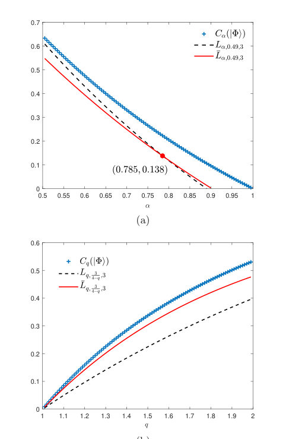
<figcaption class="paper-figure-caption"><b>Fig 1.</b> FIG. 1. The comparison of (a) Cα and its lower bounds Lα,0.49,3, ¯Lα,0.49,3, and that of (b) Cq and its lower bounds Lq, 3 4−q ,3, ¯Lq, 3 4−q ,3 for |Φ⟩given in Eq. (27) with θ = 0.2.</figcaption>
</figure>
<figure class="paper-figure-card">
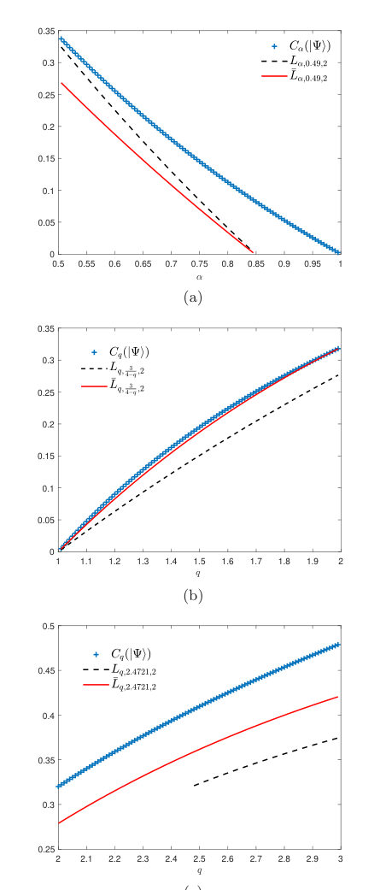
<figcaption class="paper-figure-caption"><b>Fig 2.</b> FIG. 2. The comparison of the different lower bounds for |Ψ⟩given in Eq. (28) with θ = 0.2: (a) Cα, Lα,0.49,2, and ¯Lα,0.49,2; (b) Cq, Lq, 3 4−q ,2, and ¯Lq, 3 4−q ,2; (c) Cq, Lq,2.4721,2,</figcaption>
</figure>
<figure class="paper-figure-card">
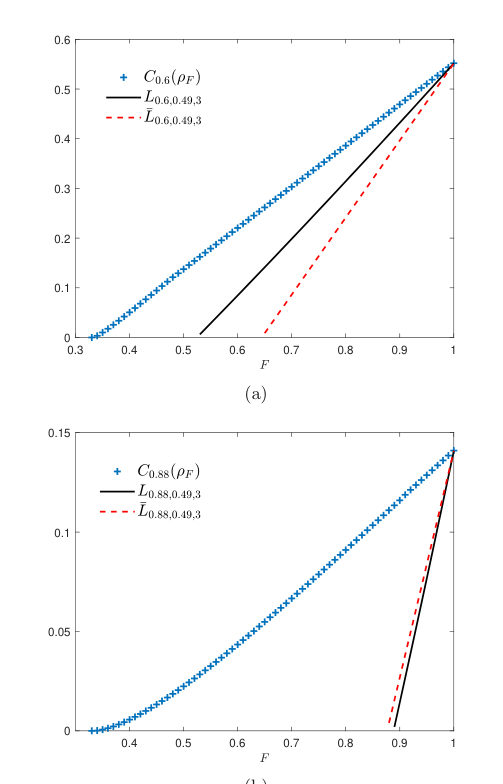
<figcaption class="paper-figure-caption"><b>Fig 3.</b> FIG. 3. The comparison of Cα and its lower bounds Lα,0.49,3, ¯Lα,0.49,3 for the 3 ⊗3 isotropic state ρF with (a) α = 0.6 and (b) α = 0.88, respectively.</figcaption>
</figure>
<figure class="paper-figure-card">
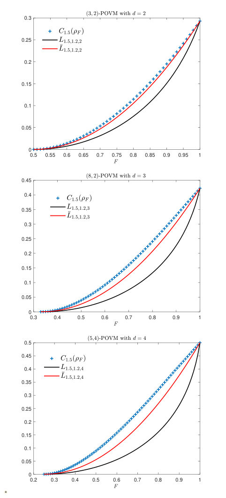
<figcaption class="paper-figure-caption"><b>Fig 4.</b> FIG. 4. The comparison between C1.5(ρF ) and its lower bounds for the cases d = 2, 3, 4, respectively.</figcaption>
</figure>
</div>

<p><strong>Summary.</strong> This paper develops computable lower bounds for a class of parameterized entanglement monotones, specifically q-concurrence and alpha-concurrence. By using a generalized (N, M)-POVM framework, the authors provide bounds that are tighter than standard PPT and realignment criteria. The work also includes analytical expressions for these measures in the case of isotropic states.</p>
<p><strong>Why it may be interesting.</strong> This is relevant for quantum information theorists as it provides more efficient, measurement-based tools for quantifying entanglement in bipartite systems without requiring full state tomography or complex optimizations.</p>
<details>
<summary>Detailed structure</summary>
<p><strong>Main problem.</strong> The difficulty of calculating faithful entanglement measures due to complex optimization processes leads to the need for computable lower bounds for parameterized entanglement monotones.</p>
<p><strong>Main result.</strong> The authors derive new, tighter lower bounds for q-concurrence and alpha-concurrence using (N, M)-POVMs, which outperform existing bounds from PPT, realignment, and SIC-POVM criteria.</p>
<p><strong>Method.</strong> The study employs informationally complete (N, M)-positive operator-valued measures, Lagrange multipliers for optimization, and convexity/concavity arguments to extend results from pure to mixed states.</p>
<p><strong>Model / system.</strong> The research focuses on bipartite quantum states (two-qubit and two-qudit systems) and specifically analyzes isotropic states.</p>
<p><strong>Key observables.</strong> q-concurrence (for q &gt; 1) and alpha-concurrence (for 0 &lt; alpha &lt; 1).</p>
<p><strong>Important parameters / regimes.</strong> Dimension d, power parameters q and alpha, and POVM parameters N and M.</p>
<p><strong>Assumptions / limitations.</strong> The derivation assumes specific parameter regimes (e.g., 1 &lt; q &lt; 2, 1/2 &lt; alpha &lt; 1) and the existence of a twirling operator to reduce states to isotropic form.</p>
<p><strong>Figures summary.</strong> Figures compare the proposed lower bounds against existing criteria (alpha-concurrence and q-concurrence) for pure and isotropic states, demonstrating the increased tightness of the new bounds.</p>
<p><strong>Paper structure.</strong> The paper introduces the problem of entanglement estimation, defines the parameterized monotones, introduces the (N, M)-POVM framework, provides theorems for new lower bounds, compares performance against existing criteria, and derives analytical formulas for isotropic states.</p>
</details>
<details>
<summary>Abstract</summary>
<p>Although numerous measures of entanglement have been proposed so far, the calculation of a given faithful entanglement measure is a hard work since it is always involved in some optimization process. It is, therefore, important to estimate the lower bound of a given entanglement measure for an arbitrary quantum state. This results in a subject of intensive mathematical research. In particular, along this line, the lower bounds of concurrence or other measures that are induced from concurrence have been explored a lot. Here, we investigate the lower bounds of two kinds of entanglement monotones, i.e., $q$-concurrence ($q>1$) and $α$-concurrence ($0<α<1$), or termed the parameterized entanglement monotone together. We obtain, in the light of the informationally complete ($N$, $M$)-positive operator-valued measure [($N$, $M$)-POVM], the lower bounds for the case of $\frac12<α<1$, $1<q<2$ for two-qudit states, and the case of $2\leqslant q<3$ for two-qubit states. We list several examples which show that the lower bounds based on ($N$, $M$)-POVM outperform that of GSIC-POVM and SIC-POVM, and all these measurement based bounds are better then the ones induced by positive partial transpose (PPT) and realignment criteria in literature. In addition, we obtain an analytical formula of the parameterized entanglement monotone with $\frac12<α<1$ and $1<q<2$ for the isotropic state.</p>
</details>
<p><sub><a href="#top">↑ back to top</a></sub></p>

<p><a id="paper-2605.22770"></a></p>
<h3 id="adiabatic-quantum-phase-estimation"><a href="http://arxiv.org/abs/2605.22770v1">Adiabatic Quantum Phase Estimation</a></h3>
<p><strong>Authors:</strong> Alexander Schmidhuber, Seth Lloyd<br>
<strong>Type:</strong> theory · <strong>Category:</strong> quantum information and computing · <strong>PDF:</strong> <a href="https://arxiv.org/pdf/2605.22770v1">https://arxiv.org/pdf/2605.22770v1</a><br>
<strong>Analysis basis:</strong> full PDF text, analyzed in chunks
<strong>Topic relevance:</strong> <code>analog quantum simulation</code> <strong>3/5</strong> · <code>entanglement &amp; information structure</code> <strong>1/5</strong> · <code>quantum measurements</code> <strong>1/5</strong></p>
<div class="figure-strip-hint">↔ Scroll figures horizontally</div>
<div class="paper-figures-scroll">
<figure class="paper-figure-card">
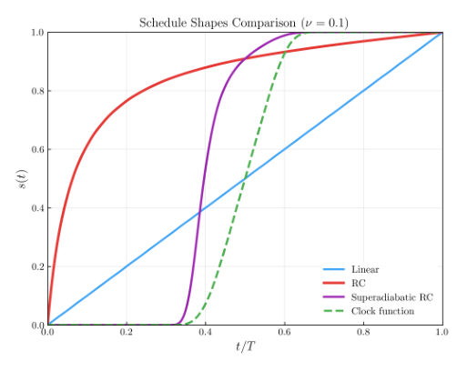
<figcaption class="paper-figure-caption"><b>Fig 1.</b> FIG. 1. A visualization of three different schedule profiles: (a) The linear ramp profile s(t) = t/T. (b) The Roland- Cerf schedule (10) mirroring the behavior of the spectral gap. (c) The Roland-Cerf schedule reparametrized by a DC clock, which we call superadiabatic RC. Also shown is the behavior of the DC clock function, whose endpoint derivatives van- ish and which thereby near-exponentially suppresses diabatic transitions.</figcaption>
</figure>
<figure class="paper-figure-card">
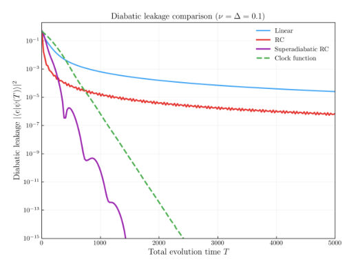
<figcaption class="paper-figure-caption"><b>Fig 2.</b> FIG. 2. Numerical computation of the diabatic leakage via exact diagonalization of the two-level Hamiltonian (8). Four different schedules are considered: linear, Roland-Cerf, su- peradiabatic Roland-Cerf, and the DC clock function, which can be interpreted as the linear schedule reparametrized by the DC clock. While the linear and Roland-Cerf schedules yield a power-law decay, the reparametrized schedules sup- press diabatic transitions near-exponentially. Both RC-type schedules display St¨uckelberg oscillations arising from coher- ent interference between nonadiabatic transitions.</figcaption>
</figure>
</div>

<p><strong>Summary.</strong> This paper introduces an adiabatic protocol for Quantum Phase Estimation that achieves optimal Heisenberg-limited scaling. By using a specialized 'superadiabatic' scheduling technique, the authors suppress errors exponentially, making adiabatic hardware a viable platform for high-precision phase estimation.</p>
<p><strong>Why it may be interesting.</strong> This is highly relevant for researchers in quantum computing and open quantum systems as it provides a way to implement fundamental algorithms on analog/adiabatic hardware with optimal scaling and robustness to dephasing.</p>
<details>
<summary>Detailed structure</summary>
<p><strong>Main problem.</strong> Developing an adiabatic version of Quantum Phase Estimation (QPE) that achieves optimal Heisenberg-limited scaling in both precision and failure probability while avoiding the deep circuits required by gate-based methods.</p>
<p><strong>Main result.</strong> The authors present a superadiabatic adiabatic protocol using a Denjoy-Carleman clock that achieves near-exponential suppression of diabatic leakage, resulting in a total runtime of O(1/epsilon * log(1/delta)).</p>
<p><strong>Method.</strong> The protocol uses a multi-stage adiabatic evolution with a reparameterized Roland-Cerf schedule and a non-quasianalytic Denjoy-Carleman clock to ensure vanishing derivatives at the boundaries of each stage.</p>
<p><strong>Model / system.</strong> An n-qubit system with Hamiltonian Hs coupled to an m-qubit ancilla register, utilizing transverse fields, pairwise ZiZj interactions, and a coupling between the system energy and a single ancilla qubit.</p>
<p><strong>Key observables.</strong> Diabatic leakage (transition probability), precision (epsilon), and failure probability (delta).</p>
<p><strong>Important parameters / regimes.</strong> Precision epsilon, failure probability delta, adiabatic parameter A, and the number of stages m.</p>
<p><strong>Assumptions / limitations.</strong> The Hamiltonian must be smooth (C-infinity) with vanishing derivatives at the endpoints, and the eigenvalues must remain separated by a minimum energy gap.</p>
<p><strong>Figures summary.</strong> Figure 1 compares linear, Roland-Cerf, and superadiabatic schedules; Figure 2 shows numerical evidence that superadiabatic schedules suppress transitions exponentially compared to power-law decay in standard schedules.</p>
<p><strong>Paper structure.</strong> The paper introduces the problem of adiabatic QPE, defines the multi-stage Hamiltonian model, develops the mathematical framework for superadiabatic estimates using Denjoy-Carleman clocks, proves leakage bounds and runtime complexity, and demonstrates applications to adiabatic Grover search.</p>
</details>
<details>
<summary>Abstract</summary>
<p>Quantum phase estimation (QPE) is a central algorithmic primitive that estimates eigenvalues of a Hamiltonian up to precision $ε$ in Heisenberg-limited time $T=Θ(1/ε)$. Standard gate-based implementations of QPE require deep controlled time-evolution circuits and are not native to analog hardware. Here, we present a simple adiabatic protocol for QPE that achieves (up to logarithmic factors) the optimal Heisenberg-limited scaling $T = O\left( \frac{1}ε \log\left(δ^{-1}\right)\right)$ in both the precision $ε$ and failure probability $δ$. By encoding eigenvalues in populations of computational basis states rather than complex phases, our approach is naturally robust against certain dephasing errors. The adiabatic protocol only requires the ability to couple a single ancilla qubit to the system Hamiltonian as well as pairwise couplings within the ancilla register.</p>
</details>
<p><sub><a href="#top">↑ back to top</a></sub></p>

<p><a id="paper-2605.21833"></a></p>
<h3 id="comment-on-entropic-costs-of-extracting-classical-ticks-from-a-quantum-clock"><a href="http://arxiv.org/abs/2605.21833v1">Comment on "Entropic Costs of Extracting Classical Ticks from a Quantum Clock"</a></h3>
<p><strong>Authors:</strong> Longyan Gong<br>
<strong>Type:</strong> theory · <strong>Category:</strong> statistical mechanics · <strong>PDF:</strong> <a href="https://arxiv.org/pdf/2605.21833v1">https://arxiv.org/pdf/2605.21833v1</a><br>
<strong>Analysis basis:</strong> full PDF text, analyzed in chunks
<strong>Topic relevance:</strong> <code>quantum measurements</code> <strong>3/5</strong> · <code>non-equilibrium dynamics</code> <strong>2/5</strong></p>
<div class="figure-strip-hint">↔ Scroll figures horizontally</div>
<div class="paper-figures-scroll">
<figure class="paper-figure-card">
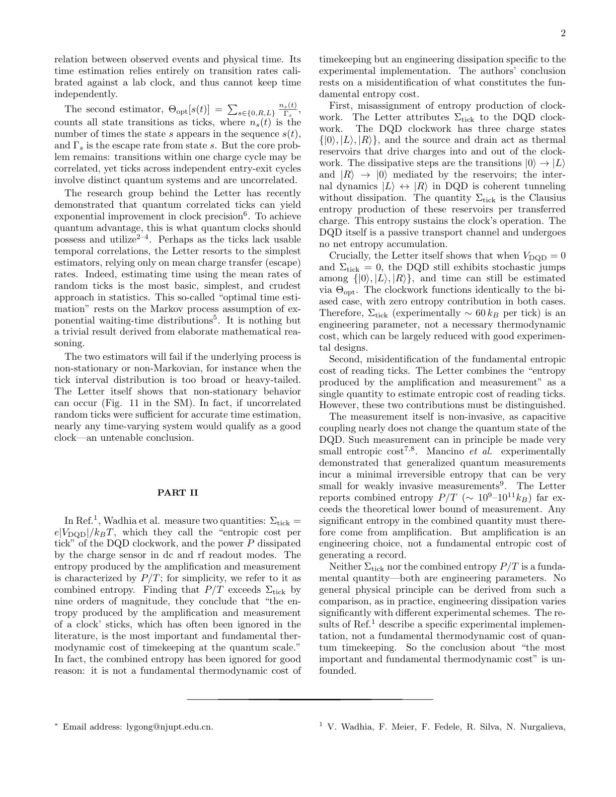
<figcaption class="paper-figure-caption"><b>Fig 1.</b> Low-resolution page preview, page 2</figcaption>
</figure>
<figure class="paper-figure-card">
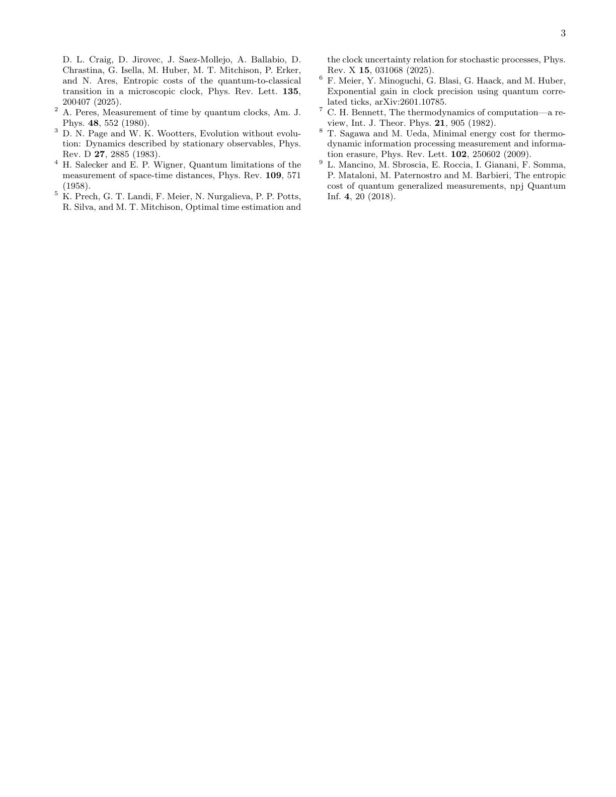
<figcaption class="paper-figure-caption"><b>Fig 2.</b> Low-resolution page preview, page 3</figcaption>
</figure>
</div>

<p><strong>Summary.</strong> This Comment argues that a recently reported quantum clock based on a double quantum dot is actually a classical system. The author shows that the reported entropic costs are merely consequences of experimental engineering, such as measurement amplification, rather than fundamental limits of quantum timekeeping.</p>
<p><strong>Why it may be interesting.</strong> This is relevant for researchers in open quantum systems and non-equilibrium thermodynamics as it addresses the fundamental distinction between engineering dissipation and the intrinsic thermodynamic costs of quantum-to-classical information extraction.</p>
<details>
<summary>Detailed structure</summary>
<p><strong>Main problem.</strong> The paper challenges the claim that a double quantum dot system functions as a quantum clock and disputes the reported fundamental thermodynamic costs of timekeeping.</p>
<p><strong>Main result.</strong> The author demonstrates that the system exhibits classical behavior lacking intrinsic temporal correlations and that the reported entropy production is due to engineering dissipation rather than fundamental quantum timekeeping costs.</p>
<p><strong>Method.</strong> The author performs a formal critique of the original work's thermodynamic analysis and statistical estimators, specifically analyzing the nature of entropy production and the role of measurement amplification.</p>
<p><strong>Model / system.</strong> A double quantum dot (DQD) system acting as an open system exchanging charge and energy with a thermal environment, including charge sensors (dc and rf reflectometry).</p>
<p><strong>Key observables.</strong> Entropy production per tick (Sigma_tick), combined entropy from amplification and measurement (P/T), and time estimators (Theta_net and Theta_opt).</p>
<p><strong>Important parameters / regimes.</strong> Bias voltage (V_DQD) and the reported entropic cost of approximately 60 kB per tick.</p>
<p><strong>Assumptions / limitations.</strong> The original work assumes DQD dynamics can be extended to coherent dynamics and relies on a Markov process assumption for the Theta_opt estimator.</p>
<p><strong>Figures summary.</strong> Table I decomposes the DQD system into its constituent parts (DQD, sensors, and environment) to classify their quantum or classical nature.</p>
<p><strong>Paper structure.</strong> The paper begins by identifying two primary flaws in the original Letter, then proceeds to critique the quantum nature of the device, followed by a critique of the statistical time estimation methods, and concludes with a rebuttal of the thermodynamic conclusions.</p>
</details>
<details>
<summary>Abstract</summary>
<p>A recent Letter by Wadhia et al. reports a realization of a quantum clock using a double quantum dot (DQD) [Phys. Rev. Lett. 135, 200407 (2005)]. This Comment identifies two fundamental issues: (I) the claimed ``quantum clock" exhibits only classical behavior and lacks intrinsic temporal correlations between ticks; it is not sufficient for accurate time as a good clock. (II) the thermodynamic analysis misassigns entropy production and conflates amplification with measurement; the reported combined entropy is an engineering dissipation, not a fundamental cost of quantum timekeeping.</p>
</details>
<p><sub><a href="#top">↑ back to top</a></sub></p>

<p><a id="paper-2605.22522"></a></p>
<h3 id="competing-incommensurability-electronic-correlations-and-superconductivity-in-a-hybrid-transition-metal-dichalcogenide"><a href="http://arxiv.org/abs/2605.22522v1">Competing incommensurability, electronic correlations, and superconductivity in a hybrid transition metal dichalcogenide</a></h3>
<p><strong>Authors:</strong> Jean C. Souza, Moshe Haim, Lorenzo Crippa, Hyeonhu Bae, Edanel Fishbein, Jonathan Ruhman, Binghai Yan, Amit Kanigel, Roser Valentí, Nurit Avraham, Haim Beidenkopf<br>
<strong>Type:</strong> both · <strong>Category:</strong> strongly correlated electrons · <strong>PDF:</strong> <a href="https://arxiv.org/pdf/2605.22522v1">https://arxiv.org/pdf/2605.22522v1</a><br>
<strong>Analysis basis:</strong> full PDF text, analyzed in chunks
<strong>Topic relevance:</strong> <code>Frenkel-Kontorova</code> <strong>3/5</strong> · <code>Kondo &amp; dissipative impurity</code> <strong>2/5</strong></p>
<div class="figure-strip-hint">↔ Scroll figures horizontally</div>
<div class="paper-figures-scroll">
<figure class="paper-figure-card">
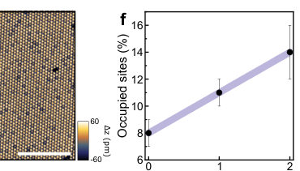
<figcaption class="paper-figure-caption"><b>Fig 1.</b> Fig. 1 Intrinsic origin for undepleted CDW sites in 4Hb-TaS2. a Crystal structure of 4Hb- TaS2. b Representative topography taken at T = 4.2 K for xSe = 1%. c Representative dI/dV spectra of occupied and depleted CDW sites (red and blue lines, respectively) taken at T = 4.2 K for xSe = 1% (Vbias = 200 mV, Isp = 200 pA, VAC = 5 meV). d, e Representative topographies for xSe = 2%, 0%. All topographies were taken with Vbias = 100 mV and Isp = 50 pA, and the white scale bar is 20 nm. f Percentage of the total sites that are occupied as a function of Se doping, xSe. The statistical analysis is further described in the SM. The solid purple line is a linear fit.</figcaption>
</figure>
<figure class="paper-figure-card">
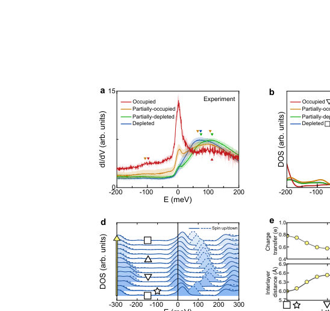
<figcaption class="paper-figure-caption"><b>Fig 2.</b> Fig. 2 Modulation of the charge transfer and the hybridization strength by the lattice mismatch. a Clustered averages of four different types of spectra obtained at the same 1T surface (Vbias = 120 mV, Isp = 150 pA, VAC = 5 mV). The shaded margins represent the standard deviation for each spectrum. b DFT calculated DOS for the 1T layer of bilayer 1T/1H-TaS2 in selected lateral displacements (marked in c). The labels denote the experimental spectral archetypes; in the DFT calculations, they identify representative local registries with different residual fillings of the 1T- derived flat band. c Relative energy landscape ∆E for lateral displacement of a 1T layer on a fixed 1H layer. Energies...</figcaption>
</figure>
<figure class="paper-figure-card">
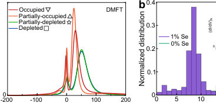
<figcaption class="paper-figure-caption"><b>Fig 3.</b> Fig. 3 The origin of the screening metal. a DMFT calculated spectra on the 4 (meta) stable moir´e positions identified in DFT (marked by corresponding symbols in Fig. 2c). b Comparison between the ZBCP width for xSe = 0% and 1%. Around 400 occupied sites spectra were analyzed for xSe = 0% and about 600 sites for xSe = 1%. The inset shows representative ZBCP spectra from both sample types. c Asymmetry of the LHB and the UHB energy relative to EF for xSe = 1%. About 250 occupied spectra were analyzed.</figcaption>
</figure>
<figure class="paper-figure-card">
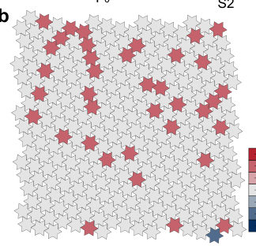
<figcaption class="paper-figure-caption"><b>Fig 4.</b> Fig. 4 The effect of superconductivity on the breathing transition of the incommensu- rate potential. a Change of the enumerated ‘occupation level’ of the CDW sites ∆nocc between T = 4.2 K to T = 1.1 K for sample S1. Change of the ‘occupation level’, ∆nocc, for b µ0H = 0 T, c µ0H∥c = 1.7 T and d µ0H⊥c = 1.7 T in sample S2. The measurements were first taken at T = 4.2 K with the respective applied magnetic fields, then the sample was cooled down with the applied field for the measurements at T = 1.1 K. All samples had xSe = 0.</figcaption>
</figure>
</div>

<p><strong>Summary.</strong> This paper identifies that an intrinsic incommensurate potential in 4Hb-TaS2 regulates electronic correlations and charge transfer between its 1T and 1H layers. This modulation creates a doped Mott regime and establishes a complex competition between the incommensurate landscape, charge-density waves, and superconductivity. The findings highlight the importance of bulk incommensurability in tuning many-body physics in hybrid materials.</p>
<p><strong>Why it may be interesting.</strong> not directly relevant</p>
<details>
<summary>Detailed structure</summary>
<p><strong>Main problem.</strong> The study aims to understand the origin of the electronic structure and the zero-bias conductance peak in the hybrid transition metal dichalcogenide 4Hb-TaS2, specifically investigating how incommensurate potentials and charge transfer influence electronic correlations and superconductivity.</p>
<p><strong>Main result.</strong> The researchers discovered that an intrinsic incommensurate potential, caused by a 1.1% lattice mismatch between 1T and 1H layers, modulates interlayer hybridization and charge transfer, driving the system into a doped Mott regime where superconductivity competes with the incommensurate landscape.</p>
<p><strong>Method.</strong> The study combines experimental Scanning Tunneling Microscopy (STM) and Spectroscopy (STS) with computational Density Functional Theory (DFT) and Dynamical Mean-Field Theory (DMFT) using a periodic Anderson model.</p>
<p><strong>Model / system.</strong> The physical system is the bulk transition metal dichalcogenide polytype 4Hb-TaS2, consisting of alternating correlated 1T and metallic 1H layers. The theoretical model is a periodic Anderson model accounting for correlated d-orbitals and uncorrelated c-electrons.</p>
<p><strong>Key observables.</strong> Zero-bias conductance peak (ZBCP), Upper and Lower Hubbard Bands (UHB/LHB), charge transfer (CT) magnitude, and spectral weight at the Fermi energy.</p>
<p><strong>Important parameters / regimes.</strong> Lattice mismatch (~1.1%), Hubbard interaction (U = 100 meV), superconducting transition temperature (Tc approx 2.6 K), and Selenium doping concentration (x = 0% to 5%).</p>
<p><strong>Assumptions / limitations.</strong> The computational approach uses a local-registry approximation for the incommensurate potential rather than a full moire supercell, and DMFT is applied to a simplified periodic Anderson model.</p>
<p><strong>Figures summary.</strong> Fig 1 shows the crystal structure and STM topography; Fig 2 illustrates the modulation of charge transfer and hybridization by lattice mismatch; Fig 3 shows DMFT calculations of ZBCP and Hubbard band evolution; Fig 4 demonstrates the effect of superconductivity on CDW configuration transitions.</p>
<p><strong>Paper structure.</strong> The paper introduces the hybrid TMD system, presents STM/STS evidence for an intrinsic incommensurate potential, uses DFT/DMFT to model the charge transfer and many-body effects, and concludes by discussing the competition between this potential and superconductivity.</p>
</details>
<details>
<summary>Abstract</summary>
<p>The engineering of superlattices in two-dimensional van der Waals materials has enabled the realization of rich phase diagrams hosting topological and strongly correlated phases. While incommensurability is widespread in three-dimensional systems, the role of moiré potentials in bulk materials remains largely unexplored. Here, using scanning tunneling microscopy, we demonstrate that a bulk transition-metal dichalcogenide polytype, 4Hb-TaS$_2$, hosts an emergent incommensurate potential between its alternating 1T and 1H layers. Interplay with a concomitant incommensurate charge-density wave suppresses the long-range order of this potential, leading to intricate coupling with electronic correlations in the doped 1T surface layer. Combining density functional theory with dynamical mean-field theory, we show that the lattice mismatch locally modulates the interlayer distance, thereby tuning both hybridization and charge transfer between the correlated 1T and metallic 1H layers. This redistribution of charge drives the system towards a doped Mott regime, in which the remaining local moments become self-screened, giving rise to a zero-bias resonance. We further find that bulk superconductivity competes with both the underlying landscape and the associated charge transfer. Our results establish incommensurate potentials as a previously overlooked ingredient in hybrid transition-metal dichalcogenides, highlighting their central role in the interplay between electronic correlations, charge-density-wave order, and unconventional superconductivity.</p>
</details>
<p><sub><a href="#top">↑ back to top</a></sub></p>

<p><a id="paper-2605.21916"></a></p>
<h3 id="a2qtgn-adaptive-amplitude-quantum-integrated-temporal-graph-network-for-dynamic-link-prediction"><a href="http://arxiv.org/abs/2605.21916v1">A2QTGN: Adaptive Amplitude Quantum-Integrated Temporal Graph Network for Dynamic Link Prediction</a></h3>
<p><strong>Authors:</strong> Nouhaila Innan, M. Murali Karthick, Simeon Kandan Sonar, Vivek Chaturvedi, Muhammad Shafique<br>
<strong>Type:</strong> both · <strong>Category:</strong> quantum information and computing · <strong>PDF:</strong> <a href="https://arxiv.org/pdf/2605.21916v1">https://arxiv.org/pdf/2605.21916v1</a><br>
<strong>Analysis basis:</strong> full PDF text, analyzed in chunks
<strong>Topic relevance:</strong> <code>QC/QI experiment</code> <strong>3/5</strong></p>
<div class="figure-strip-hint">↔ Scroll figures horizontally</div>
<div class="paper-figures-scroll">
<figure class="paper-figure-card">
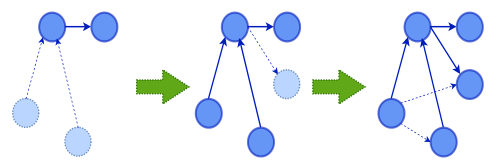
<figcaption class="paper-figure-caption"><b>Fig 1.</b> Fig. 1: Dynamic graphs</figcaption>
</figure>
<figure class="paper-figure-card">
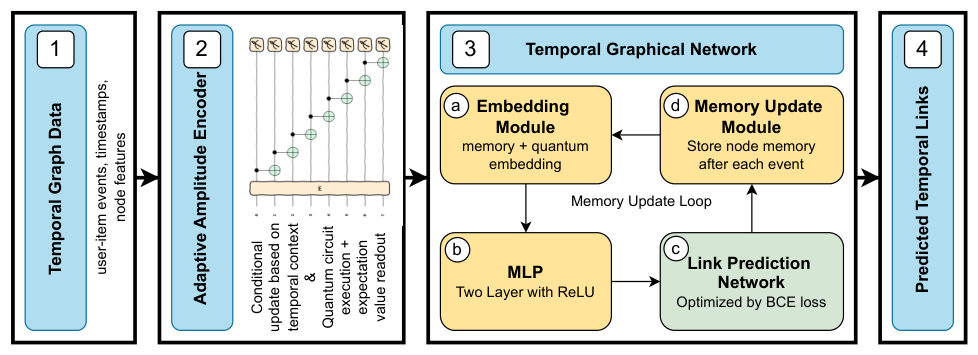
<figcaption class="paper-figure-caption"><b>Fig 2.</b> Fig. 2: Pipeline of the A2QTGN methodology. The system processes a temporal interaction stream {(ut, vt, Xt, Ft, t)} and converts it into future link predictions through four coordinated modules: (a) temporal interaction data forming the discrete-time graph sequence Gt = (Vt, Et, Xt, Ft); (b) the AAE, which computes temporal feature variation ∆xi,t, derives the activity factor αi,t = σ(β∥∆xi,t∥2), and conditionally re-encodes the node into a quantum state |ψi,t⟩whose expectation values yield the embedding zi,t; (c) the TGN memory mechanism, where node memories mi,t are updated using the fused representation hi,t = NN([mprev i,t ∥zi,t]); and (d) the link prediction module, which scores...</figcaption>
</figure>
<figure class="paper-figure-card">
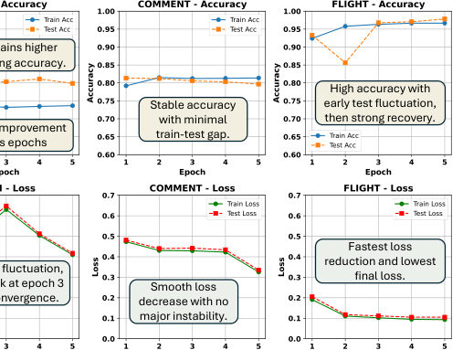
<figcaption class="paper-figure-caption"><b>Fig 3.</b> Fig. 3: Performance convergence on various datasets.</figcaption>
</figure>
</div>

<p><strong>Summary.</strong> This paper introduces a hybrid quantum-classical framework for predicting future interactions in evolving networks. By using an adaptive mechanism to only update quantum embeddings when significant changes occur, it reduces computational overhead and improves prediction accuracy. The model is shown to be effective even under the noisy conditions of near-term quantum hardware.</p>
<p><strong>Why it may be interesting.</strong> not directly relevant</p>
<details>
<summary>Detailed structure</summary>
<p><strong>Main problem.</strong> The challenge of performing efficient dynamic link prediction in evolving networks by overcoming the limitations of classical temporal graph models and the high computational cost of re-encoding quantum states at every timestep.</p>
<p><strong>Main result.</strong> The A2QTGN framework achieves superior predictive performance across multiple temporal graph benchmarks and demonstrates robustness to noise and limited shot counts on real IBM quantum hardware.</p>
<p><strong>Method.</strong> A hybrid quantum-classical approach using Adaptive Amplitude Encoding (AAE) to selectively update quantum embeddings only when temporal feature variations exceed a threshold, integrated with a Temporal Graph Network (TGN) backbone.</p>
<p><strong>Model / system.</strong> A hybrid quantum-classical neural network architecture utilizing PennyLane for quantum circuit execution, specifically employing amplitude encoding on 8 qubits and evaluating performance on IBM quantum devices (e.g., ibm_torino).</p>
<p><strong>Key observables.</strong> Expectation values of Pauli-Z operators, prediction accuracy, precision, AUC, and Mean Reciprocal Rank (MRR).</p>
<p><strong>Important parameters / regimes.</strong> Activity factor (alpha), update threshold (tau), number of qubits (8), and measurement shot counts (100-shot vs 2048-shot).</p>
<p><strong>Assumptions / limitations.</strong> The model assumes that temporal feature variations can be effectively captured by a threshold-based re-encoding strategy and that the quantum-classical interface can be optimized via gradient-based learning.</p>
<p><strong>Figures summary.</strong> Figure 1 shows the concept of dynamic graphs; Figure 2 details the A2MTGN pipeline including the adaptive update loop; Figure 3 displays performance convergence curves; and various tables present ablation studies and hardware-aware performance metrics.</p>
<p><strong>Paper structure.</strong> The paper identifies limitations in classical and static quantum graph models, proposes the A2QTGN architecture and its adaptive mechanism, details the experimental setup on various benchmarks, presents ablation studies on encoding and update strategies, and concludes with hardware-aware performance evaluations.</p>
</details>
<details>
<summary>Abstract</summary>
<p>Dynamic link prediction is important for modeling evolving interactions in complex systems, including social, communication, financial, and transportation networks. Classical temporal graph models capture sequential dependencies, but they may struggle to represent concurrent and rapidly changing node-edge interactions in large dynamic graphs. We propose A2QTGN (Adaptive Amplitude Quantum-Integrated Temporal Graph Network), a hybrid quantum-classical framework that combines adaptive amplitude encoding with a Temporal Graph Network backbone. The proposed mechanism represents node interaction features as quantum states and selectively refreshes amplitude embeddings based on temporal activity, preserving stable node states while emphasizing meaningful structural changes. This design reduces unnecessary quantum re-encoding and improves temporal representation for link prediction. Experiments on five Temporal Graph Benchmark datasets show that A2QTGN achieves strong predictive and ranking performance across diverse dynamic graphs. Ablation studies confirm the importance of both the quantum embedding module and the adaptive update strategy, while hardware-aware inference using a noisy backend and limited real-device execution supports the feasibility of near-term quantum-assisted temporal graph learning.</p>
</details>
<p><sub><a href="#top">↑ back to top</a></sub></p>

<p><a id="paper-2605.22226"></a></p>
<h3 id="geometric-construction-of-optimal-teleportation-witnesses"><a href="http://arxiv.org/abs/2605.22226v1">Geometric Construction of Optimal Teleportation Witnesses</a></h3>
<p><strong>Authors:</strong> Yanning Jia, Fenzhuo Guo, Mengxuan Bai, Mengyan Li, Haifeng Dong, Fei Gao<br>
<strong>Type:</strong> theory · <strong>Category:</strong> quantum information and computing · <strong>PDF:</strong> <a href="https://arxiv.org/pdf/2605.22226v1">https://arxiv.org/pdf/2605.22226v1</a><br>
<strong>Analysis basis:</strong> full PDF text, analyzed in chunks
<strong>Topic relevance:</strong> <code>entanglement &amp; information structure</code> <strong>3/5</strong></p>
<div class="figure-strip-hint">↔ Scroll figures horizontally</div>
<div class="paper-figures-scroll">
<figure class="paper-figure-card">
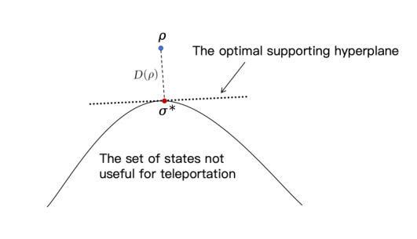
<figcaption class="paper-figure-caption"><b>Fig 1.</b> FIG. 1: Geometric characterization. The set S of states not useful for teleportation is a convex set. For ρ /∈S, the closest point σ∗defines the distance D(ρ). The optimal supporting hyperplane at σ∗</figcaption>
</figure>
<figure class="paper-figure-card">
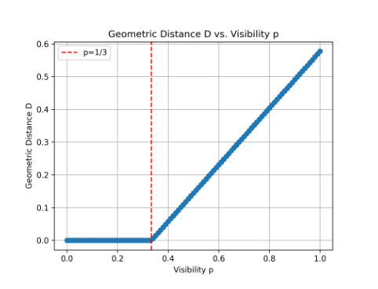
<figcaption class="paper-figure-caption"><b>Fig 2.</b> FIG. 2: Geometric distance D(ρW (p)) of the two-qubit Werner states as a function of p. The distance becomes nonzero at the critical point p = 1/3, indicating that the state becomes useful for teleportation.</figcaption>
</figure>
<figure class="paper-figure-card">
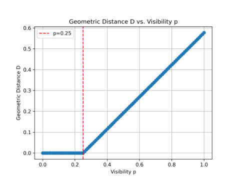
<figcaption class="paper-figure-caption"><b>Fig 3.</b> FIG. 3: Geometric distance D(ρ(p)) of the maximally entangled mixed states as a function of p. The distance becomes nonzero at the critical point p = 0.25, indicating that the state becomes useful for teleportation.</figcaption>
</figure>
<figure class="paper-figure-card">
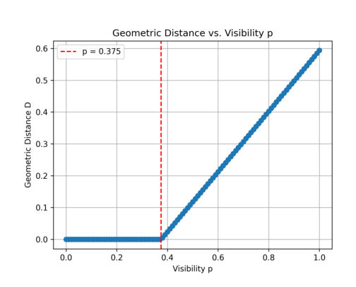
<figcaption class="paper-figure-caption"><b>Fig 4.</b> FIG. 4: Geometric distance D(ρ(p)) of the NME states as a function of p. The distance becomes nonzero at the critical point p = 0.375, indicating that the state becomes useful for teleportation.</figcaption>
</figure>
</div>

<p><strong>Summary.</strong> The paper introduces a geometric method to determine if a quantum state can provide a quantum advantage for teleportation. By calculating the shortest distance to a set of 'useless' states, the authors provide a necessary and sufficient criterion and a way to construct optimal witnesses for arbitrary two-qudit systems.</p>
<p><strong>Why it may be interesting.</strong> This work provides a powerful tool for characterizing the operational utility of entanglement in higher-dimensional systems, which is essential for designing robust quantum networks and protocols.</p>
<details>
<summary>Detailed structure</summary>
<p><strong>Main problem.</strong> Developing a systematic, constructive framework to identify whether an arbitrary two-qudit entangled state is useful for quantum teleportation, overcoming the limitations of existing criteria that are either restricted to qubits or only provide sufficient conditions.</p>
<p><strong>Main result.</strong> The authors present a geometric method to construct optimal teleportation witnesses and establish that the shortest distance between a state and the set of useless states serves as a necessary and sufficient criterion for teleportation usefulness.</p>
<p><strong>Method.</strong> A two-layer iterative cutting-plane algorithm is used to solve a convex semi-infinite programming problem, finding the projection of a target state onto the convex set of useless states via an outer-layer SDP and an inner-layer randomized fixed-point iteration.</p>
<p><strong>Model / system.</strong> The study considers arbitrary bipartite two-qudit entangled states, specifically testing the method on two-qubit Werner states, two-qubit Maximally Entangled Mixed States (MEMS), and asymmetric two-qutrit non-maximally entangled states.</p>
<p><strong>Key observables.</strong> Average teleportation fidelity, Maximal Entangled Fraction (MEF), and the geometric Frobenius distance D(rho) from the set of useless states.</p>
<p><strong>Important parameters / regimes.</strong> The visibility parameter p, the dimension of the qudit system d, and the critical threshold pc where teleportation advantage begins.</p>
<p><strong>Assumptions / limitations.</strong> The inner optimization layer uses a randomized fixed-point iteration which may converge to a local optimum, potentially providing a lower bound on the MEF.</p>
<p><strong>Figures summary.</strong> Figure 1 illustrates the geometric construction of the witness via a separating hyperplane; Figures 2, 3, and 4 show the geometric distance D(rho) as a function of visibility p for Werner, MEMS, and qutrit states, respectively, marking the onset of usefulness.</p>
<p><strong>Paper structure.</strong> The paper introduces the problem of teleportation usefulness, defines the geometric framework and the cutting-plane algorithm, presents the construction of the optimal witness, and validates the method through numerical applications to various two-qubit and two-qutrit state classes.</p>
</details>
<details>
<summary>Abstract</summary>
<p>Not all entangled states are useful for quantum teleportation. We present a geometric method to construct optimal teleportation witnesses, which provide operational necessary and sufficient criteria for identifying the teleportation usefulness of arbitrary two-qudit entangled states. Specifically, by developing a two-layer iterative cutting-plane algorithm to solve the shortest distance problem from the target state $ρ$ to the convex set $S$ of useless states, we obtain the projection point $σ^* \in S$ and then construct the optimal teleportation witness from the projection geometry. Moreover, the shortest distance $D(ρ)$ obtained during this construction also serves as a necessary and sufficient criterion for usefulness. We apply our method to identify the teleportation usefulness of three classes of entangled states.</p>
</details>
<p><sub><a href="#top">↑ back to top</a></sub></p>

<p><a id="paper-2605.22713"></a></p>
<h3 id="self-testing-of-exact-entanglement-embezzlement"><a href="http://arxiv.org/abs/2605.22713v1">Self-testing of exact entanglement embezzlement</a></h3>
<p><strong>Authors:</strong> Samuel J. Harris<br>
<strong>Type:</strong> theory · <strong>Category:</strong> quantum information and computing · <strong>PDF:</strong> <a href="https://arxiv.org/pdf/2605.22713v1">https://arxiv.org/pdf/2605.22713v1</a><br>
<strong>Analysis basis:</strong> full PDF text, analyzed in chunks
<strong>Topic relevance:</strong> <code>entanglement &amp; information structure</code> <strong>3/5</strong></p>
<div class="figure-strip-hint">↔ Scroll figures horizontally</div>
<div class="paper-figures-scroll">
<figure class="paper-figure-card">
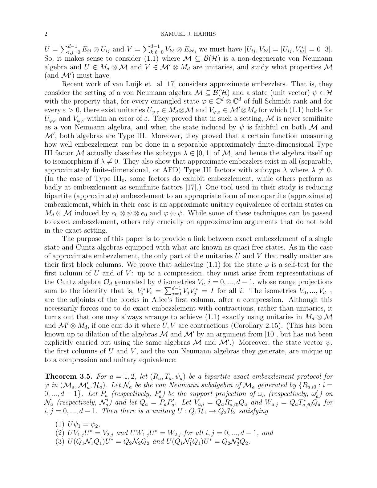
<figcaption class="paper-figure-caption"><b>Fig 1.</b> Low-resolution page preview, page 2</figcaption>
</figure>
<figure class="paper-figure-card">
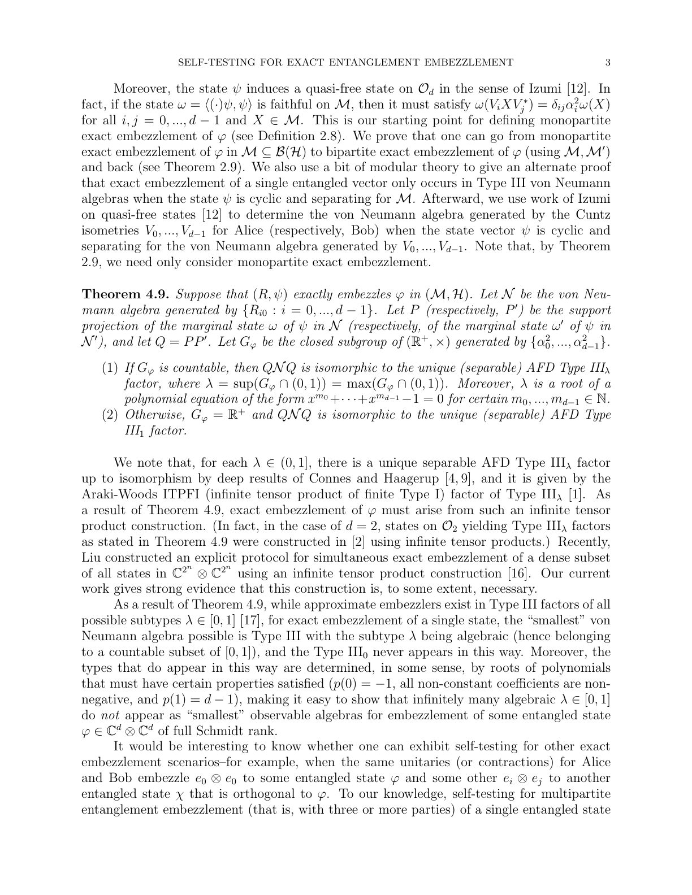
<figcaption class="paper-figure-caption"><b>Fig 2.</b> Low-resolution page preview, page 3</figcaption>
</figure>
<figure class="paper-figure-card">
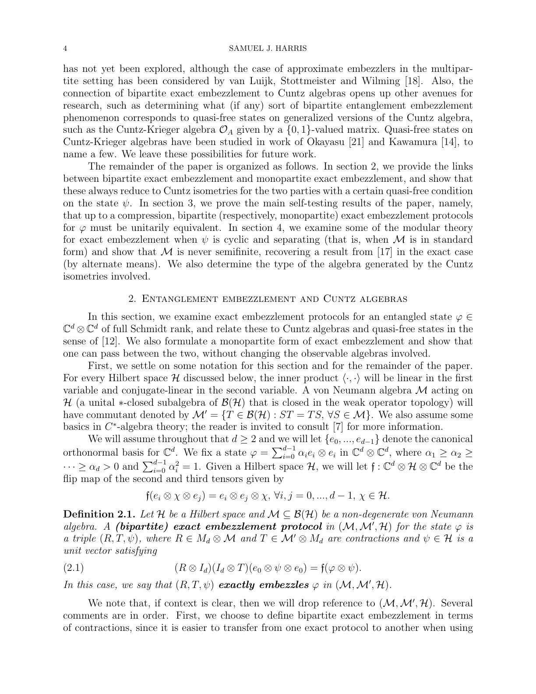
<figcaption class="paper-figure-caption"><b>Fig 3.</b> Low-resolution page preview, page 4</figcaption>
</figure>
<figure class="paper-figure-card">
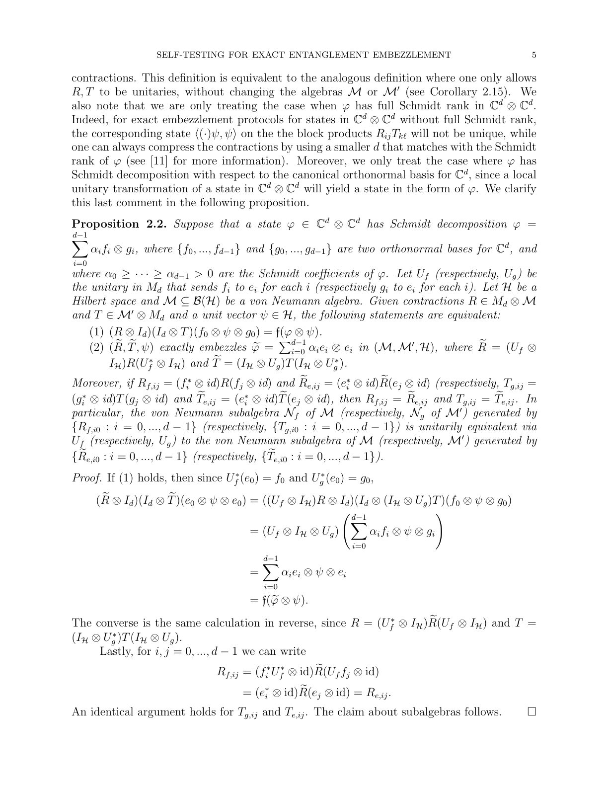
<figcaption class="paper-figure-caption"><b>Fig 4.</b> Low-resolution page preview, page 5</figcaption>
</figure>
<figure class="paper-figure-card">
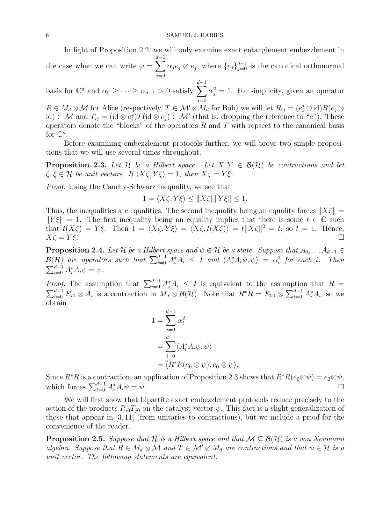
<figcaption class="paper-figure-caption"><b>Fig 5.</b> Low-resolution page preview, page 6</figcaption>
</figure>
</div>

<p><strong>Summary.</strong> This paper proves that exact entanglement embezzlement is a self-testing protocol for Cuntz isometries and a specific quasi-free state. It further characterizes the underlying von Neumann algebras as Type III factors, where the specific subtype is determined by the Schmidt coefficients of the embezzled state.</p>
<p><strong>Why it may be interesting.</strong> This work provides deep mathematical insights into the resource theory of entanglement and the fundamental algebraic constraints required for exact entanglement manipulation, which is relevant to the study of infinite-dimensional quantum systems and open quantum systems.</p>
<details>
<summary>Detailed structure</summary>
<p><strong>Main problem.</strong> The paper investigates the self-testing properties and algebraic structure of exact bipartite entanglement embezzlement protocols.</p>
<p><strong>Main result.</strong> It proves that exact entanglement embezzlement acts as a self-test for Cuntz isometries and a unique quasi-free state, and classifies the resulting von Neumann algebras as AFD Type III_lambda or Type III_1 factors.</p>
<p><strong>Method.</strong> The author employs operator algebra techniques, including von Neumann algebra theory, Cuntz algebra properties, modular theory (Tomita-Takesaki), and GNS representations.</p>
<p><strong>Model / system.</strong> A bipartite entanglement embezzlement protocol where two parties use a shared catalyst state psi in a von Neumann algebra M and its commutant M' to obtain a target entangled state phi via local unitaries or contractions.</p>
<p><strong>Key observables.</strong> Schmidt coefficients of the target state, modular operator eigenvalues, and the Connes spectrum.</p>
<p><strong>Important parameters / regimes.</strong> Schmidt coefficients (alpha_i), dimension (d), and the parameter lambda for Type III_lambda factors.</p>
<p><strong>Assumptions / limitations.</strong> The target state phi has full Schmidt rank; the von Neumann algebra M is non-degenerate; the marginal states are faithful.</p>
<p><strong>Paper structure.</strong> The paper progresses from defining the bipartite embezzlement protocol and reducing it to a monopartite problem, to establishing the self-testing of Cuntz isometries via GNS representation, and finally using modular theory to classify the resulting von Neumann algebra types.</p>
</details>
<details>
<summary>Abstract</summary>
<p>We consider bipartite exact entanglement embezzlement with a catalyst state vector $ψ$ in a Hilbert space $\mathcal{H}$ using unitaries (or more generally, contractions). If $\mathcal{M} \subseteq \mathcal{B}(\mathcal{H})$ is a von Neumann algebra and $U \in M_d \otimes \mathcal{M}$ and $V \in \mathcal{M}' \otimes M_d$ are unitaries (or more generally contractions), then such a protocol is of the form $(U \otimes I_d)(I_d \otimes V)(e_0 \otimes ψ\otimes e_0)=\sum_{i=0}^{d-1} α_i e_i \otimes ψ\otimes e_i$, where each $α_i>0$ and $\sum_{i=0}^{d-1} α_i^2=1$. We show that any such protocol must arise from a unique state on the tensor product $\mathcal{O}_d \otimes \mathcal{O}_d$ of the Cuntz algebra with itself. As a result, we prove that exact entanglement embezzlement is a self-test for a collection of $d$ Cuntz isometries for each party and a unique quasi-free state on the Cuntz algebra $\mathcal{O}_d$ in the sense of \cite{Iz93}. Moreover, we use modular theory to show that the von Neumann algebra generated by the copy of $\mathcal{O}_d$ is the unique separable approximately finite-dimensional Type $\text{III}_λ$ factor for some $0<λ\leq 1$, where $λ$ can be determined by an algebraic condition on the Schmidt coefficients of the state $\varphi=\sum_{i=0}^{d-1} α_i e_i \otimes e_i$.</p>
</details>
<p><sub><a href="#top">↑ back to top</a></sub></p>

<p><a id="paper-2605.22392"></a></p>
<h3 id="the-relative-entropy-of-magic-and-its-nonadditivity"><a href="http://arxiv.org/abs/2605.22392v1">The relative entropy of magic and its nonadditivity</a></h3>
<p><strong>Authors:</strong> Carolin Deckers, Justus Neumann, Hermann Kampermann, Dagmar Bruß<br>
<strong>Type:</strong> theory · <strong>Category:</strong> quantum information and computing · <strong>PDF:</strong> <a href="https://arxiv.org/pdf/2605.22392v1">https://arxiv.org/pdf/2605.22392v1</a><br>
<strong>Analysis basis:</strong> full PDF text, analyzed in chunks
<strong>Topic relevance:</strong> <code>entanglement &amp; information structure</code> <strong>3/5</strong></p>
<div class="figure-strip-hint">↔ Scroll figures horizontally</div>
<div class="paper-figures-scroll">
<figure class="paper-figure-card">
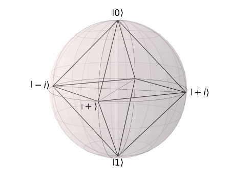
<figcaption class="paper-figure-caption"><b>Fig 1.</b> FIG. 1: Bloch ball with stabilizer octahedron. The magic states are outside the stabilizer octahedron.</figcaption>
</figure>
<figure class="paper-figure-card">
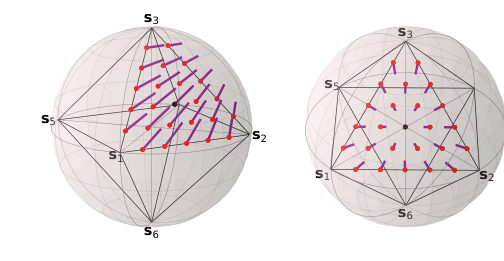
<figcaption class="paper-figure-caption"><b>Fig 2.</b> FIG. 2: The purple lines are xρ(σ, t) for 0 &lt; t ≤tmax for some σ in the triangle spanned by s1, s2 and s3. The red circles represent the closest stabilizer states to the states on the purple line that they intersect. The stabilizer state at the center of the triangle is black. The intersection of the Bloch sphere and the purple line starting at the black dot is the T-state.</figcaption>
</figure>
<figure class="paper-figure-card">
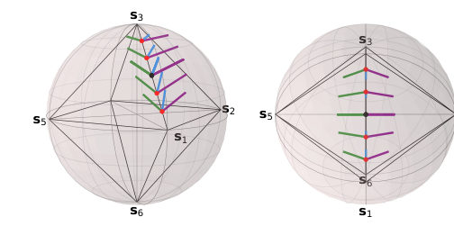
<figcaption class="paper-figure-caption"><b>Fig 3.</b> FIG. 3: Magic states are represented by the lines starting at their closest stabilizer state (red circles) on the edge with vertices s1 and s3. The lines are the magic states for different values of c. For c = 1/ √</figcaption>
</figure>
<figure class="paper-figure-card">
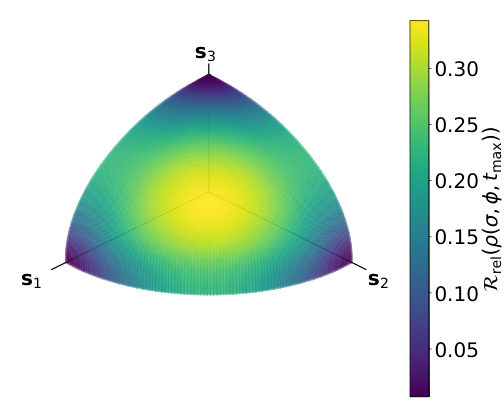
<figcaption class="paper-figure-caption"><b>Fig 4.</b> FIG. 4: Relative entropy of magic Rrel(ρ(σ, ϕ, tmax)) determined by Eq. (23) for stabilizer states in the triangle with the vertices s1, s2 and s3 including the hyperplanes with −b ≤c ≤0 for the states on the edges.</figcaption>
</figure>
<figure class="paper-figure-card">
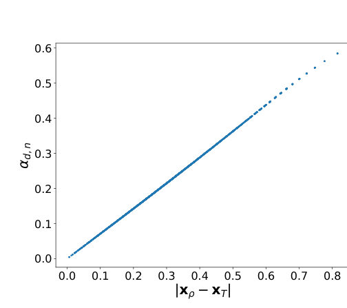
<figcaption class="paper-figure-caption"><b>Fig 5.</b> FIG. 5: Angle αd,n between the purple lines of Fig. 2b and the normal vector of the triangle n = (1, 1, 1)/ √</figcaption>
</figure>
</div>

<p><strong>Summary.</strong> This paper provides a rigorous geometric characterization of magic states in the resource theory of magic and proves that the relative entropy of magic is nonadditive for multi-qubit systems. This finding is significant for understanding how quantum resources scale in stabilizer-based quantum computing architectures.</p>
<p><strong>Why it may be interesting.</strong> not directly relevant</p>
<details>
<summary>Detailed structure</summary>
<p><strong>Main problem.</strong> The paper investigates the properties of the relative entropy of magic, specifically focusing on its geometric distribution in single-qubit systems and its nonadditivity in multi-qubit tensor product states.</p>
<p><strong>Main result.</strong> The authors prove that the relative entropy of magic is nonadditive for an infinite class of n-qubit states where the magic states and their closest stabilizer states do not commute. They also characterize the symmetric arrangement of magic states around the faces of the stabilizer octahedron.</p>
<p><strong>Method.</strong> The study uses the resource theory of magic, employing geometric approaches in the Bloch ball, analytical derivations using the Hadamard product, and a proof by contradiction to establish nonadditivity.</p>
<p><strong>Model / system.</strong> The framework is the resource theory of magic applied to single-qubit and multi-qubit systems, where the set of free states is defined by the stabilizer polytope (the convex hull of stabilizer states).</p>
<p><strong>Key observables.</strong> Relative entropy of magic (R_rel)</p>
<p><strong>Important parameters / regimes.</strong> The parameter t representing the distance from a stabilizer state, the Bloch vector length, and the commutation relation between magic and stabilizer states.</p>
<p><strong>Assumptions / limitations.</strong> The proof of nonadditivity assumes a specific class of states where at least two single-qubit magic states do not commute with their closest stabilizer states.</p>
<p><strong>Figures summary.</strong> Fig 1 shows the stabilizer octahedron in the Bloch ball; Fig 2 and 3 illustrate the trajectories and tilting of magic states relative to stabilizer states on facets and edges; Fig 4 shows the distribution of relative entropy values on a facet; Fig 5 shows the linear correlation between the angle of inclination and the distance to T-states.</p>
<p><strong>Paper structure.</strong> The paper begins by defining the resource theory and single-qubit geometry, moves to the analytical characterization of magic states and their symmetry, then presents a formal proof of the nonadditivity of the relative entropy of magic for multi-qubit systems, and concludes with conjectures and open questions.</p>
</details>
<details>
<summary>Abstract</summary>
<p>In most stabilizer-based quantum computing schemes, so-called magic states are a necessary resource for implementing non-transversal quantum gates. With the resource theory of magic, it is possible to analyze and quantify the generation of the non-stabilizer states. The relative entropy is a measure used in various resource theories. For single qubits, we characterize magic states and their closest stabilizer states by applying analytical results known from the relative entropy of entanglement and show that the magic states and their closest stabilizer states are arranged symmetrically around the states at the centers of the faces of the stabilizer octahedron. For tensor products of single-qubit states, we prove analytically that the relative entropy of magic is nonadditive in almost all cases.</p>
</details>
<p><sub><a href="#top">↑ back to top</a></sub></p>

<p><a id="paper-2605.21756"></a></p>
<h3 id="towards-a-quantum-decision-tree-in-a-laser-pumped-four-level-system"><a href="http://arxiv.org/abs/2605.21756v1">Towards a quantum decision tree in a laser pumped four-level system</a></h3>
<p><strong>Authors:</strong> Dawit Hailuf Hailu<br>
<strong>Type:</strong> theory · <strong>Category:</strong> quantum information and computing · <strong>PDF:</strong> <a href="https://arxiv.org/pdf/2605.21756v1">https://arxiv.org/pdf/2605.21756v1</a><br>
<strong>Analysis basis:</strong> full PDF text, analyzed in chunks
<strong>Topic relevance:</strong> <code>analog quantum simulation</code> <strong>2/5</strong> · <code>correlated / nonlocal dissipation</code> <strong>2/5</strong> · <code>entanglement &amp; information structure</code> <strong>2/5</strong> · <code>methods for driven-dissipative</code> <strong>2/5</strong> · <code>non-equilibrium dynamics</code> <strong>2/5</strong></p>
<div class="figure-strip-hint">↔ Scroll figures horizontally</div>
<div class="paper-figures-scroll">
<figure class="paper-figure-card">
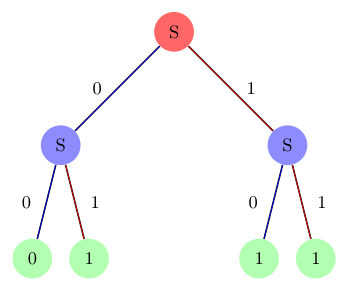
<figcaption class="paper-figure-caption"><b>Fig 1.</b> FIG. 1: Decision tree representation of the OR logic gate. In this tree, the path taken through the nodes represents the decision-making process, where each path corresponds to evaluating the OR gate for a specific input combination. The paths correspond- ing to input 0 are shown in blue, while those for input 1 are shown in red.</figcaption>
</figure>
<figure class="paper-figure-card">
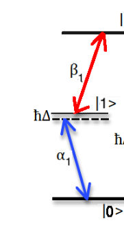
<figcaption class="paper-figure-caption"><b>Fig 2.</b> FIG. 3: Four-level diamond-shaped, with coupling lasers. Blue pump laser, and red Stokes laser.</figcaption>
</figure>
<figure class="paper-figure-card">
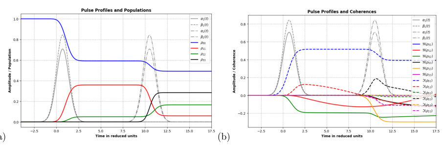
<figcaption class="paper-figure-caption"><b>Fig 3.</b> FIG. 4: Plots of the (a) Time evolution of the pulse profiles and the populations of the four states in a four- level diamond-shaped quantum system. The pulses drive population transitions between connected states. The population initially resides in a state |0⟩, and as the pulses are applied, the population is cycled through the system, ultimately redistributing among the states. Time is presented in reduced units. (b) Time evolution of the pulse profiles and the real and imaginary parts of the coherences for a four-level diamond-shaped quantum system. The real (ℜ) and imaginary (ℑ) parts of the density matrix elements correspond to the coherences between the states, which evolve under the...</figcaption>
</figure>
<figure class="paper-figure-card">
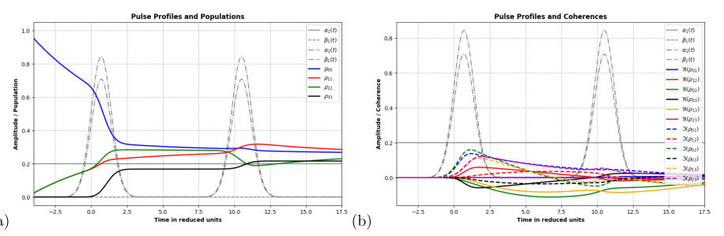
<figcaption class="paper-figure-caption"><b>Fig 4.</b> FIG. 5: (a) Time evolution of pulse profiles and state populations in a four-level diamond-shaped quantum system with noise. The applied pulses induce population transfers between connected states. Initially, the population is in state |0⟩, and as the pulses interact with the system, the population cycles through the various states, eventually reaching a new equilibrium distribution. Time is expressed in reduced units. (b) Time evolution of pulse profiles and the real and imaginary components of coherences in the same system. The real (ℜ) and imaginary (ℑ) parts of the density matrix elements describe coherences between states, which evolve due to the pulses. Oscillations in the coherences...</figcaption>
</figure>
<figure class="paper-figure-card">
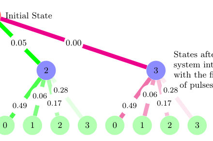
<figcaption class="paper-figure-caption"><b>Fig 5.</b> FIG. 6: The proposed quantum tree with colored paths</figcaption>
</figure>
</div>

<p><strong>Summary.</strong> This paper proposes a method to simulate quantum decision trees using a four-level atomic system driven by laser pulses. By controlling pulse amplitudes, the researchers can redistribute populations to mimic decision branches, offering a scalable approach for quantum-enhanced decision-making and optimization.</p>
<p><strong>Why it may be interesting.</strong> It bridges quantum optics and quantum information by showing how specific atomic level configurations and pulse sequences can be engineered to perform algorithmic tasks like decision tree traversal, while also addressing the impact of environmental noise on quantum coherences.</p>
<details>
<summary>Detailed structure</summary>
<p><strong>Main problem.</strong> Developing a framework to implement quantum decision trees using a laser-driven four-level atomic system to achieve computational advantages over classical decision-making.</p>
<p><strong>Main result.</strong> The study demonstrates that controlled population redistribution in a diamond-shaped four-level system can effectively simulate the logic of a quantum decision tree, with potential scalability to N-level systems.</p>
<p><strong>Method.</strong> The authors employ Lie-algebraic formalism (SU(4) group) and the Alhassid-Levine method to analyze system dynamics via a 15-dimensional vector representation of the density matrix.</p>
<p><strong>Model / system.</strong> A four-level atomic system in a diamond-shaped configuration where states |0&gt;, |1&gt;, |2&gt;, and |3&gt; are coupled by pump lasers (alpha) and Stokes pulses (beta). The dynamics are governed by a time-dependent Hamiltonian under the Rotating Wave Approximation and a Liouville master equation.</p>
<p><strong>Key observables.</strong> Population probabilities (diagonal elements of the density matrix) and coherences (off-diagonal elements).</p>
<p><strong>Important parameters / regimes.</strong> Pulse amplitudes and temporal profiles (alpha_j(t), beta_j(t)), detunings, and decoherence rates (pure dephasing and population relaxation).</p>
<p><strong>Assumptions / limitations.</strong> The system is initially in a pure ground state |0&gt;; detunings are assumed to be equal; and the model considers the specific case of a diamond-shaped energy configuration.</p>
<p><strong>Figures summary.</strong> Figure 1 shows an OR gate decision tree; Figure 2 presents a truth table; Figure 3 illustrates the diamond-shaped atomic coupling; Figure 4 shows time evolution of populations and coherences in an isolated system; Figure 5 shows the impact of dissipation; Figure 6 visualizes the proposed quantum tree.</p>
<p><strong>Paper structure.</strong> The paper progresses from defining classical decision logic to proposing a quantum-mechanical emulation, establishing the SU(4) mathematical framework, analyzing the dynamics of isolated and dissipative systems, and discussing scalability and potential implementation in rare-earth-ion-doped crystals.</p>
</details>
<details>
<summary>Abstract</summary>
<p>In this study, we examine an innovative framework towards implementing quantum decision trees utilizing a laser-driven four-level system. We discuss a diamond-shaped atomic configuration, in which we apply Lie-algebraic formalisms to analyze the dynamics of the system. The system is perturbed by a Stokes pulse, represented as $β_j(t)$ (for $j=1,2$), which interacts with the atomic states $|0\rangle, |3\rangle$ and $|1\rangle, |2\rangle$. In addition, a pump laser, denoted as $α_j(t)$, couples the states $|0\rangle, |1\rangle$ and $|2\rangle, |3\rangle$. By employing pulse profiles that possess identical temporal behavior but differ in amplitude, one can effectively redistribute the population from the initial ground state to the other energy levels. This technique facilitates the mimicry of a quantum decision tree. We highlight that the proposed methodology is scalable to N-level systems, enhancing its adaptability and potential utility in quantum computing and various decision-making applications. We introduce a novel framework for implementing quantum decision trees using a four-level laser-driven atomic system. Employing a diamond-shaped energy configuration, we analyze system dynamics through Lie-algebraic methods. Using pulse profiles with identical temporal structures but varying amplitudes, we achieve controlled population redistribution among energy levels, effectively simulating a quantum decision tree. This methodology is scalable to systems of \(N\) levels, offering potential applications in quantum computing and decision-making processes.</p>
</details>
<p><sub><a href="#top">↑ back to top</a></sub></p>

<p><a id="paper-2605.21755"></a></p>
<h3 id="universalities-of-defects-in-quantum-field-theories"><a href="http://arxiv.org/abs/2605.21755v1">Universalities of Defects in Quantum Field Theories</a></h3>
<p><strong>Authors:</strong> Siwei Zhong<br>
<strong>Type:</strong> theory · <strong>Category:</strong> quantum gases · <strong>PDF:</strong> <a href="https://arxiv.org/pdf/2605.21755v1">https://arxiv.org/pdf/2605.21755v1</a><br>
<strong>Analysis basis:</strong> full PDF text, analyzed in chunks
<strong>Topic relevance:</strong> <code>Keldysh / 2PI / non-Gaussian methods</code> <strong>2/5</strong> · <code>Kondo &amp; dissipative impurity</code> <strong>2/5</strong> · <code>analog quantum simulation</code> <strong>2/5</strong> · <code>non-equilibrium universality</code> <strong>2/5</strong> · <code>entanglement &amp; information structure</code> <strong>1/5</strong> · <code>non-equilibrium dynamics</code> <strong>1/5</strong></p>
<div class="figure-strip-hint">↔ Scroll figures horizontally</div>
<div class="paper-figures-scroll">
<figure class="paper-figure-card">
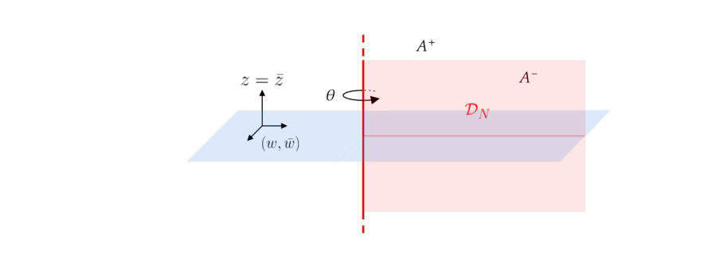
<figcaption class="paper-figure-caption"><b>Fig 1.</b> Figure 2.1: The configuration of the conformal twist defect and the topological duality defect in R4. The vertical red line is the 2-dimensional twist defect, which is localized at w = ¯w = 0 and extends along the (z, ¯z) plane. The twist defect is attached to the 2- dimensional topological defect DN shown as the half-infinite red plane. This figure only displays the R3 slice defined by z = ¯z.</figcaption>
</figure>
<figure class="paper-figure-card">

<figcaption class="paper-figure-caption"><b>Fig 2.</b> Figure 2.2: DCFT two-point and three-point functions. The red plane represents the twist defect at w = ¯w = 0. Left: the bulk-defect two-point function ⟨F ˆOs ℓ⟩. Middle: the bulk- defect-defect three-point function ⟨F ˆOs2 ℓ2 ˆOs3 ℓ3⟩in the limit ξ →0, where the bulk point x approaches the defect. Right: the three-point function ⟨F ˆOs2 ℓ2 ˆOs3 ℓ3⟩in the limit ξ →+∞, where the projection of the bulk point onto the defect plane coincides with the midpoint between (z2, ¯z2) and (z3, ¯z3).</figcaption>
</figure>
<figure class="paper-figure-card">
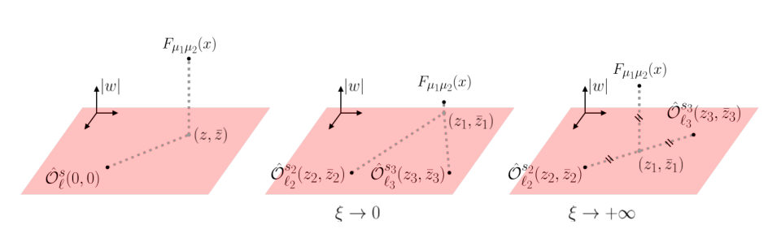
<figcaption class="paper-figure-caption"><b>Fig 3.</b> Figure 2.2. It follows from the monodromy condition (2.37) that ⟨F ˆOs2 ℓ2 ˆOs3 ℓ3⟩= 0 unless s = s2 +s3 ∈ Z ± 1</figcaption>
</figure>
<figure class="paper-figure-card">
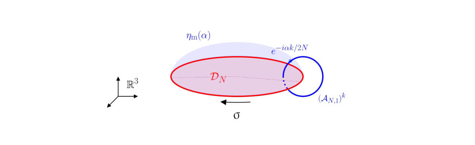
<figcaption class="paper-figure-caption"><b>Fig 4.</b> Figure 2.3: The configuration of the anyonic brane (AN)k and the twist defect. The red circle denotes the twist defect defined on a Lorentzian cylinder. The red disk denotes the topological duality defect DN. The anyonic brane is shown as a blue circle, which links with the twist defect. The magnetic 1-form symmetry operator ηm(α) is shown as the blue surface. This figure only shows the spatial R3, and every defect except for ηm(α) extends in the time direction.</figcaption>
</figure>
<figure class="paper-figure-card">
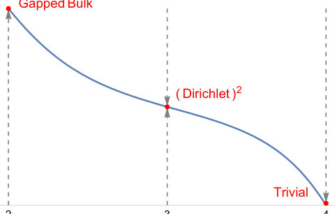
<figcaption class="paper-figure-caption"><b>Fig 5.</b> Figure 2.4: IR-stable fixed points associated with bilinear defect deformations in the free theory. The blue curve shows how the fixed point depends on the spacetime dimension d, while the grey dashed arrow indicates the defect RG flow from the UV to the IR. Fixed points with physical interpretations in integer dimensions are marked in red.</figcaption>
</figure>
</div>

<p><strong>Summary.</strong> This work explores how the long-distance behavior of defects in quantum field theories is governed by universal symmetry principles. It establishes effective field theory descriptions for complex objects like chiral defects and giant vortices in superfluids. The results show that microscopic details are often irrelevant to the macroscopic dynamics of these systems.</p>
<p><strong>Why it may be interesting.</strong> It provides a deep connection between high-energy symmetry principles (like CFT and duality) and the emergent universal dynamics in many-body systems like ultracold atomic gases and superfluids.</p>
<details>
<summary>Detailed structure</summary>
<p><strong>Main problem.</strong> Investigating the universal aspects of defect dynamics in quantum field theories, specifically focusing on how symmetry principles determine the infrared properties of boundaries, impurities, and vortices.</p>
<p><strong>Main result.</strong> Demonstrates that defect dynamics (such as chiral defects in Maxwell theory and giant vortices in superfluids) are universally determined by symmetry, identifying new effective theories like Warped Conformal Field Theory (WCFT) for rotating superfluids.</p>
<p><strong>Method.</strong> Uses symmetry-based analysis, Renormalization Group (RG) flows, Operator Product Expansion (OPE), and effective field theory approaches including the epsilon expansion.</p>
<p><strong>Model / system.</strong> The work covers a variety of models including Maxwell theory with topological duality defects, O(N) models, and non-relativistic systems like atomic quantum gases and rotating 2D superfluids.</p>
<p><strong>Key observables.</strong> Scaling dimensions, conformal weights, bulk-to-defect OPE coefficients, displacement and tilt operators, and particle density profiles.</p>
<p><strong>Important parameters / regimes.</strong> UV and IR limits, codimension, conformal weights, angular velocity, and the large angular momentum limit (giant vortex regime).</p>
<p><strong>Assumptions / limitations.</strong> Assumes translation symmetry perpendicular to the defect is broken and that scaling invariance is enhanced to conformal symmetry at fixed points.</p>
<p><strong>Figures summary.</strong> Visuals include configurations of various defects, RG and phase diagrams, correlation functions, and physical profiles of particle density and eigenmodes.</p>
<p><strong>Paper structure.</strong> The dissertation progresses from a general framework of defect dynamics in QFT to specific applications in Maxwell theory, O(N) models, and finally to non-relativistic systems like quantum gases and rotating superfluids.</p>
</details>
<details>
<summary>Abstract</summary>
<p>Defects are both physically rich objects and powerful tools in modern quantum field theory. They are extended operators, such as boundaries, impurities, and probe particles, embedded in many-body systems. In this dissertation, we study the universal aspects of defect dynamics from the perspective of symmetry principles. We bring together several themes, including defect renormalization group flows, effective string theory, and impurities in atomic quantum gases.</p>
</details>
<p><sub><a href="#top">↑ back to top</a></sub></p>

<p><a id="paper-2605.22267"></a></p>
<h3 id="emulation-of-optically-interconnected-quantum-data-centers-topologies-for-cost-fidelity-benchmarking"><a href="http://arxiv.org/abs/2605.22267v1">Emulation of Optically Interconnected Quantum Data Centers Topologies for Cost-Fidelity Benchmarking</a></h3>
<p><strong>Authors:</strong> Seyed Navid Elyasi, Seyed Morteza Ahmadian, Rui Lin, Paolo Monti<br>
<strong>Type:</strong> both · <strong>Category:</strong> quantum information and computing · <strong>PDF:</strong> <a href="https://arxiv.org/pdf/2605.22267v1">https://arxiv.org/pdf/2605.22267v1</a><br>
<strong>Analysis basis:</strong> full PDF text, analyzed in chunks
<strong>Topic relevance:</strong> <code>correlated / nonlocal dissipation</code> <strong>2/5</strong> · <code>entanglement &amp; information structure</code> <strong>2/5</strong> · <code>methods for driven-dissipative</code> <strong>2/5</strong></p>
<div class="figure-strip-hint">↔ Scroll figures horizontally</div>
<div class="paper-figures-scroll">
<figure class="paper-figure-card">
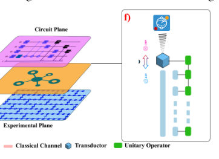
<figcaption class="paper-figure-caption"><b>Fig 1.</b> Fig. 1. (a)–(c) Ring, line, and star QDC topologies. (d) Entanglement distribution via SWAP oper- ations. (e) Simulation layers: circuit, configuration, and experimental layers. (f) Collisional noise model for transduction and fiber effects.</figcaption>
</figure>
<figure class="paper-figure-card">
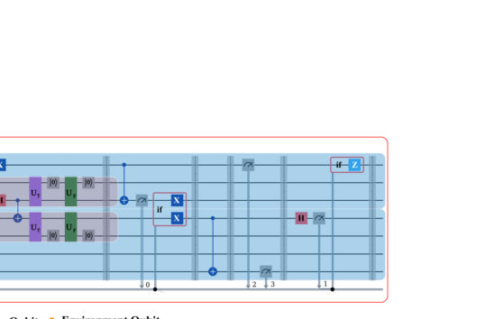
<figcaption class="paper-figure-caption"><b>Fig 2.</b> Fig. 2. (a) GHZ-state circuit connecting processing qubits for QDC evaluation. (b) Cat-comm pro- tocol implementing the remote CNOT gate with noisy entanglement generation.</figcaption>
</figure>
<figure class="paper-figure-card">
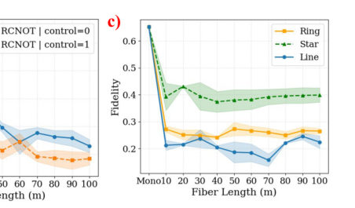
<figcaption class="paper-figure-caption"><b>Fig 3.</b> Fig. 3. (a) Communication cost for GHZ-state execution across QDC topologies. (b) RCNOT fi- delity results based on the noise model. (c) Fidelity results for the GHZ circuit.</figcaption>
</figure>
</div>

<p><strong>Summary.</strong> This paper uses a digital quantum computer to simulate different network architectures for quantum data centers. It finds that a star topology is the most efficient for balancing hardware cost with high-fidelity entanglement distribution. The study specifically highlights that transduction noise is the most significant hurdle for large-scale quantum interconnects.</p>
<p><strong>Why it may be interesting.</strong> This work is highly relevant to researchers in open quantum systems and quantum optics as it quantifies how environmental coupling and photon loss impact the scalability of distributed quantum networks.</p>
<details>
<summary>Detailed structure</summary>
<p><strong>Main problem.</strong> Evaluating the trade-off between interconnection cost and fidelity in different Quantum Data Center (QDC) topologies, specifically addressing how transduction and fiber noise impact distributed quantum computing.</p>
<p><strong>Main result.</strong> The star topology provides the optimal trade-off between cost and fidelity, outperforming ring and line topologies by minimizing noise accumulation and SWAP operations. Transduction noise was identified as the primary driver of fidelity degradation.</p>
<p><strong>Method.</strong> The study uses a digital quantum computer (IBM Quantum Torino) to emulate optically interconnected QPUs using a three-layer simulation framework (circuit, configuration, and experimental layers) and a collisional model for noise.</p>
<p><strong>Model / system.</strong> The system consists of interconnected QPUs in ring, star, and line topologies, each containing processing, communication, and flying qubits. The noise is modeled via a collisional model with an interaction Hamiltonian between communication qubits and an environment qubit to simulate transduction and fiber loss.</p>
<p><strong>Key observables.</strong> GHZ-state fidelity, RCNOT gate performance, and communication cost (number of entanglement links).</p>
<p><strong>Important parameters / regimes.</strong> Transduction coupling strength (kappa = 0.5), fiber attenuation constant (0.0392 km^-1), and topology-specific link counts.</p>
<p><strong>Assumptions / limitations.</strong> The noise is modeled using a Markovian evolution approach where the environment qubit is reset after each iteration.</p>
<p><strong>Figures summary.</strong> Fig. 1 illustrates the QDC topologies, the simulation framework, and the collisional noise model; Fig. 2 details the GHZ-state circuit and the cat-comm protocol for RCNOT.</p>
<p><strong>Paper structure.</strong> The paper introduces the QDC scalability problem, describes the physical model and noise implementation, details the emulation framework on IBM hardware, presents the comparative results of different topologies, and concludes with a cost-fidelity analysis.</p>
</details>
<details>
<summary>Abstract</summary>
<p>We emulate optically interconnected quantum processors in ring, star, and line topologies using a quantum computer. GHZ benchmarks show that the star provides the best trade-off between cost and fidelity under transduction and fiber noise.</p>
</details>
<p><sub><a href="#top">↑ back to top</a></sub></p>

<p><a id="paper-2605.22807"></a></p>
<h3 id="how-many-systems-can-be-dephased-before-the-quantum-switch-becomes-causally-definite"><a href="http://arxiv.org/abs/2605.22807v1">How many systems can be dephased before the quantum switch becomes causally definite?</a></h3>
<p><strong>Authors:</strong> Yassine Benhaj, Kuntal Sengupta, Cyril Branciard<br>
<strong>Type:</strong> theory · <strong>Category:</strong> quantum information and computing · <strong>PDF:</strong> <a href="https://arxiv.org/pdf/2605.22807v1">https://arxiv.org/pdf/2605.22807v1</a><br>
<strong>Analysis basis:</strong> full PDF text, analyzed in chunks
<strong>Topic relevance:</strong> <code>correlated / nonlocal dissipation</code> <strong>2/5</strong> · <code>entanglement &amp; information structure</code> <strong>2/5</strong> · <code>methods for driven-dissipative</code> <strong>2/5</strong></p>
<div class="figure-strip-hint">↔ Scroll figures horizontally</div>
<div class="paper-figures-scroll">
<figure class="paper-figure-card">
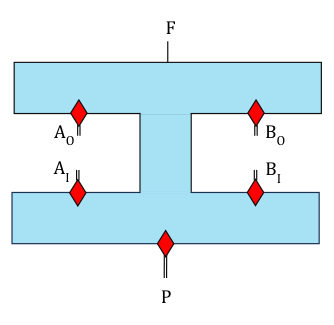
<figcaption class="paper-figure-caption"><b>Fig 1.</b> FIG. 1. Any bipartite process matrix in which the global past P and both parties’ input and output systems are fully dephased becomes causally separable, even if the global future F is left coherent. The red diamonds illus- trate dephasing in a fixed basis, which makes their incom- ing and outgoing systems effectively classical (double- stroke wires).</figcaption>
</figure>
<figure class="paper-figure-card">
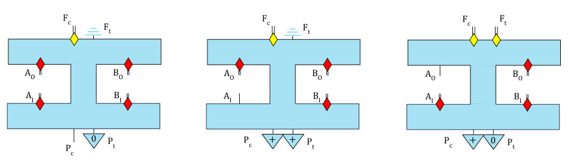
<figcaption class="paper-figure-caption"><b>Fig 2.</b> FIG. 2. Three explicit constructions derived from a standard quantum switch showing that causal indefiniteness can survive when all but one systems are fully dephased – as long as the single remaining coherent system is not F. (Left) Only the past control system remains coherent: the past is decomposed as P = Pc ⊗Pt, with the target state fixed to |0⟩Pt while the control Pc remains open; both internal parties’ input and output systems are dephased in the computational (Z) basis (red diamonds), the future target Ft is traced out, and the future control Fc is dephased in the X basis (yellow diamond). (Middle) Only one party’s input system AI remains coherent: the past state is fixed to |+,...</figcaption>
</figure>
</div>

<p><strong>Summary.</strong> This paper explores the limits of how much decoherence a quantum process with indefinite causal order can tolerate. It proves that as long as at least one system other than the 'future' system remains coherent, the process can maintain its non-classical, causally nonseparable nature. This demonstrates that indefinite causal order is surprisingly robust to the dephasing of multiple subsystems.</p>
<p><strong>Why it may be interesting.</strong> This is highly relevant to researchers in open quantum systems and quantum information as it defines the fundamental limits of how much environmental noise (decoherence) a quantum-controlled causal structure can withstand before losing its non-classical advantages.</p>
<details>
<summary>Detailed structure</summary>
<p><strong>Main problem.</strong> The paper investigates the robustness of causal nonseparability (indefinite causal order) against dephasing/decoherence, specifically determining how many quantum systems can be dephased before a process becomes causally separable.</p>
<p><strong>Main result.</strong> The authors show that causal nonseparability persists if any single system other than the future system remains undephased, but vanishes if all systems are dephased or if only the future system remains coherent.</p>
<p><strong>Method.</strong> The study uses the process matrix framework and Choi representation to analyze bipartite and multipartite processes, employing dephasing maps and semidefinite programming to test for causal nonseparability.</p>
<p><strong>Model / system.</strong> The primary model is the Quantum Switch, a paradigmatic process with indefinite causal order, analyzed within the framework of bipartite and N-partite quantum circuits with quantum control (QC-QCs).</p>
<p><strong>Key observables.</strong> Causal nonseparability vs. causal separability, and the presence or absence of quantum coherence in specific input/output slots.</p>
<p><strong>Important parameters / regimes.</strong> Dephasing regimes (computational vs. diagonal bases) and the specific subsystems (past, future, input, and output) being subjected to decoherence.</p>
<p><strong>Assumptions / limitations.</strong> The proofs rely on the assumption that specific subsystems are dephased in predefined bases and focus on the class of quantum circuits with quantum control.</p>
<p><strong>Figures summary.</strong> Figure 1 illustrates the transition to causal separability when all systems or only the future system are coherent; Figure 2 shows explicit constructions where nonseparability persists despite high levels of dephasing.</p>
<p><strong>Paper structure.</strong> The paper introduces the problem of causal nonseparability robustness, provides a mathematical proof for the bipartite case involving global past and future, generalizes these findings to N-partite quantum circuits via induction, and concludes with explicit examples of partially dephased processes that retain indefinite causal order.</p>
</details>
<details>
<summary>Abstract</summary>
<p>Quantum processes with indefinite causal order -- so-called causally nonseparable processes -- can exhibit various advantages over quantum circuits with a fixed or a well-defined causal structure. A natural question is how much nonclassicality is required for a process to display causal nonseparability. Here we address this by investigating how many systems can be dephased (or decohered) before this property vanishes. First, for bipartite processes with open past and future we show that if all systems are dephased, or if only the future system is kept undephased, then the process becomes causally separable. However, if any single system other than the future system remains undephased, then there exist processes that retain causal nonseparability. Next, we demonstrate a similar behaviour in the multipartite case, when restricted to the physically motivated class of quantum circuits with quantum control (QC-QCs). Namely, dephasing all systems or keeping only the future system undephased renders any QC-QC causally separable; while causal nonseparability can persist if any non-future system is left undephased.</p>
</details>
<p><sub><a href="#top">↑ back to top</a></sub></p>

<p><a id="paper-2605.22316"></a></p>
<h3 id="possible-topological-decoherence-transition-in-relativistic-electron-beams-propagating-through-coulomb-disordered-media"><a href="http://arxiv.org/abs/2605.22316v1">Possible Topological Decoherence Transition in Relativistic Electron Beams Propagating through Coulomb-Disordered Media</a></h3>
<p><strong>Authors:</strong> Yury A. Budkov<br>
<strong>Type:</strong> theory · <strong>Category:</strong> disordered systems and neural networks · <strong>PDF:</strong> <a href="https://arxiv.org/pdf/2605.22316v1">https://arxiv.org/pdf/2605.22316v1</a><br>
<strong>Analysis basis:</strong> full PDF text, analyzed in chunks
<strong>Topic relevance:</strong> <code>Keldysh / 2PI / non-Gaussian methods</code> <strong>2/5</strong> · <code>driven-dissipative phase transition</code> <strong>2/5</strong> · <code>non-equilibrium universality</code> <strong>2/5</strong></p>
<div class="figure-strip-hint">↔ Scroll figures horizontally</div>
<div class="paper-figures-scroll">
<figure class="paper-figure-card">
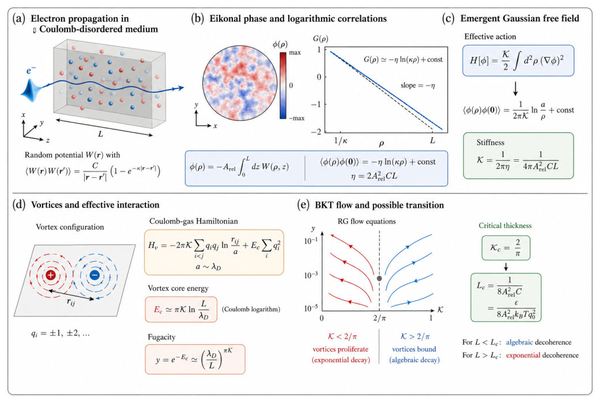
<figcaption class="paper-figure-caption"><b>Fig 1.</b> FIG. 1. Schematic illustration of the emergence of an effective two-dimensional field theory for electron decoherence in a Coulomb-disordered medium and the possible Berezinskii–Kosterlitz–Thouless (BKT) scenario. (a) Relativistic electron propagation through a fluctuating Coulomb environment characterized by the screened correlation function K(r) = C</figcaption>
</figure>
</div>

<p><strong>Summary.</strong> This paper proposes that electron beams passing through disordered media undergo a topological transition similar to the BKT transition. As the sample thickness increases, the system moves from algebraic to exponential decoherence due to the proliferation of phase vortices. This effect is potentially observable in liquid-cell or cryo-electron microscopy.</p>
<p><strong>Why it may be interesting.</strong> It demonstrates how a 3D disordered medium can give rise to an emergent 2D topological phase transition (BKT) in the coherence properties of a probe beam, bridging disordered systems and topological physics.</p>
<details>
<summary>Detailed structure</summary>
<p><strong>Main problem.</strong> Investigating the asymptotic behavior of mutual coherence in relativistic electron beams passing through Coulomb-disordered media and determining if a BKT-type topological phase transition occurs as a function of sample thickness.</p>
<p><strong>Main result.</strong> The study identifies a critical sample thickness Lc that separates a regime of algebraic decoherence from one of exponential decoherence driven by the proliferation of free vortices.</p>
<p><strong>Method.</strong> The author uses the eikonal approximation and a paraxial reduction of the Dirac equation, followed by a renormalization-group analysis of a 2D Coulomb gas model.</p>
<p><strong>Model / system.</strong> A relativistic electron beam propagating through a 3D classical one-component plasma (Coulomb-disordered medium) such as aqueous electrolytes or cryogenic samples, modeled via a 2D Gaussian free-field action.</p>
<p><strong>Key observables.</strong> Mutual coherence function gamma(rho) and phase structure function Dphi(rho).</p>
<p><strong>Important parameters / regimes.</strong> Critical thickness Lc, effective stiffness K, propagation length L, and the Debye screening length lambda_D.</p>
<p><strong>Assumptions / limitations.</strong> The phase is assumed to be compact (phi = phi + 2pi) to allow for vortices, and the potential is treated as a static Gaussian random potential.</p>
<p><strong>Figures summary.</strong> Figure 1 shows a schematic of electron propagation through a fluctuating environment, the resulting logarithmic phase correlation, the mapping to a 2D Gaussian free field, and the introduction of vortex configurations.</p>
<p><strong>Paper structure.</strong> The paper introduces the physical problem of electron beam decoherence, derives an effective 2D field theory from the eikonal approximation, applies renormalization-group analysis to a vortex gas model, and concludes with experimental implications for TEM.</p>
</details>
<details>
<summary>Abstract</summary>
<p>We show that the mutual coherence of a relativistic electron beam in a Coulomb-disordered medium is governed by an effective two-dimensional compact phase field with a logarithmic correlation function. The corresponding Gaussian free-field action exhibits a stiffness inversely proportional to the propagation length. When the compact nature of the phase is taken into account, the system supports vortex excitations that interact as a two-dimensional Coulomb gas. Renormalization-group analysis of this gas indicates the existence of a critical sample thickness $L_c$ at which a Berezinskii--Kosterlitz--Thouless (BKT) transition may occur, separating a regime of algebraic decoherence from one where free vortices proliferate and coherence is destroyed exponentially. The critical thickness is expressed through fundamental microscopic parameters and could be observed in transmission electron microscopy of liquid cells or cryogenic samples.</p>
</details>
<p><sub><a href="#top">↑ back to top</a></sub></p>

<p><a id="paper-2605.21933"></a></p>
<h3 id="thermodynamic-irreversibility-of-training-algorithms"><a href="http://arxiv.org/abs/2605.21933v1">Thermodynamic Irreversibility of Training Algorithms</a></h3>
<p><strong>Authors:</strong> Liu Ziyin, Yuanjie Ren, Adam Levine, Isaac Chuang<br>
<strong>Type:</strong> both · <strong>Category:</strong> disordered systems and neural networks · <strong>PDF:</strong> <a href="https://arxiv.org/pdf/2605.21933v1">https://arxiv.org/pdf/2605.21933v1</a><br>
<strong>Analysis basis:</strong> full PDF text, analyzed in chunks
<strong>Topic relevance:</strong> <code>Keldysh / 2PI / non-Gaussian methods</code> <strong>2/5</strong> · <code>non-equilibrium dynamics</code> <strong>2/5</strong> · <code>non-equilibrium universality</code> <strong>2/5</strong></p>
<div class="figure-strip-hint">↔ Scroll figures horizontally</div>
<div class="paper-figures-scroll">
<figure class="paper-figure-card">
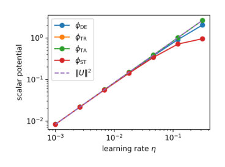
<figcaption class="paper-figure-caption"><b>Fig 1.</b> FIG. 1. All four potentials agree with each other at a small learning rate. As the learning rates increase, they start to deviate, but still have the qualitative agreement that a higher learning rate corresponds to a higher potential, signaling that they are all qualitatively good metrics of irreversibility of the training process.</figcaption>
</figure>
<figure class="paper-figure-card">
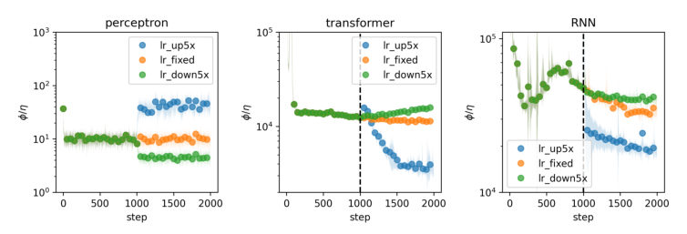
<figcaption class="paper-figure-caption"><b>Fig 2.</b> FIG. 2. Anomalous fluctuation effect in transformer training dynamics. There is a qualitative distinction between the effect of changing the learning rate in a simple linear model (perceptron) and in nonlinear models such as transformers. In linear models, the classical optimization theory predicts an increase in the fluctuation of the gradient due to increased instability [22] – because there is a single local minimum, and so it is impossible for the model to move to a different, low-fluctuation model. In sharp contrast, the nonlinear-model experiments reported here show lower update fluctuation at larger learning rate, in agreement with the prediction of the irreversibility theory.</figcaption>
</figure>
</div>

<p><strong>Summary.</strong> This paper establishes that different ways of measuring the irreversibility of AI training algorithms are mathematically equivalent at small learning rates. It demonstrates that the error introduced by discrete training steps creates an emergent force that pushes models toward more stable and robust regions of the loss landscape.</p>
<p><strong>Why it may be interesting.</strong> The paper provides a rigorous mapping between the discrete-time optimization of neural networks and non-equilibrium stochastic thermodynamics, offering a way to treat learning dynamics as a driven particle system with emergent potentials.</p>
<details>
<summary>Detailed structure</summary>
<p><strong>Main problem.</strong> The paper aims to characterize the thermodynamic irreversibility of deep learning training algorithms and understand how discretization errors act as an emergent force in the optimization landscape.</p>
<p><strong>Main result.</strong> The authors prove that four different measures of irreversibility (discretization error, time-renormalization, time-reversal asymmetry, and entropy production) are equivalent to leading order in the learning rate. They also show that this irreversibility generates an emergent force that drives training toward stable, low-fluctuation regions.</p>
<p><strong>Method.</strong> The work uses backward error analysis, renormalization group (RG) approaches to time-axis coarse-graining, and stochastic thermodynamics. Numerical validation is performed using Transformers, RNNs, and linear perceptrons.</p>
<p><strong>Model / system.</strong> The system is modeled as a discrete-time stochastic Langevin process for neural network parameters, where the update rule is defined by a vector field (e.g., SGD or Adam) with a learning rate eta.</p>
<p><strong>Key observables.</strong> Discretization error potential (phi_DE), time-reversal asymmetry (phi_TA), stochastic-thermodynamic entropy production (phi_ST), and update energy (eU_s).</p>
<p><strong>Important parameters / regimes.</strong> Learning rate (eta), noise scale (sigma), and the Jacobian of the update field (J_U).</p>
<p><strong>Assumptions / limitations.</strong> The update field is assumed to be smooth (C2 or C3) and possess a symmetric Jacobian (J_U = J_U^T). The analysis focuses on the small learning rate limit.</p>
<p><strong>Figures summary.</strong> Figure 1 shows the qualitative and quantitative agreement between the four irreversibility potentials at small learning rates. Figure 2 illustrates 'anomalous fluctuations' in Transformers, where larger learning rates lead to lower update fluctuations.</p>
<p><strong>Paper structure.</strong> The paper establishes a theoretical framework for irreversibility, proves the equivalence of four different metrics using backward error analysis and RG, analyzes the symmetry-breaking properties of the resulting emergent force, and provides numerical experiments on various neural architectures to validate the theory.</p>
</details>
<details>
<summary>Abstract</summary>
<p>The training algorithms for AI systems all introduce far-from-equilibrium dynamical processes, and understanding the irreversibility of these algorithms is a fundamental step towards understanding the learning dynamics of modern AI systems. In this work, we establish a general framework for defining and analyzing the irreversibility of training algorithms. We show that four different ways to characterize the irreversibility of dynamical processes are equivalent to leading order in the step size $η$: numerical backward error $φ_{\rm DE}$, time-renormalized correction $φ_{\rm TR}$, microscopic time reversal asymmetry $φ_{\rm TA}$, and the (regularized) stochastic-thermodynamic entropy production $φ_{\rm ST}$. The irreversibility gives rise to a time-reversal-symmetry-breaking emergent force that generically breaks non-isometric continuous reparametrization symmetries, preserves orthogonal symmetries, and leads to a universal preference for those learning trajectories that minimize the entropy production rate.</p>
</details>
<p><sub><a href="#top">↑ back to top</a></sub></p>

<p><a id="paper-2605.21643"></a></p>
<h3 id="balancing-quasi-bragg-regime-and-velocity-selectivity-in-quantum-enhanced-atom-interferometry"><a href="http://arxiv.org/abs/2605.21643v1">Balancing Quasi-Bragg Regime and Velocity Selectivity in Quantum-Enhanced Atom Interferometry</a></h3>
<p><strong>Authors:</strong> Christian Miguel Karres, Daniel Derr, Enno Giese<br>
<strong>Type:</strong> theory · <strong>Category:</strong> other · <strong>PDF:</strong> <a href="https://arxiv.org/pdf/2605.21643v1">https://arxiv.org/pdf/2605.21643v1</a><br>
<strong>Analysis basis:</strong> full PDF text, analyzed in chunks
<strong>Topic relevance:</strong> <code>Keldysh / 2PI / non-Gaussian methods</code> <strong>2/5</strong> · <code>quantum measurements</code> <strong>2/5</strong> · <code>entanglement &amp; information structure</code> <strong>1/5</strong></p>
<div class="figure-strip-hint">↔ Scroll figures horizontally</div>
<div class="paper-figures-scroll">
<figure class="paper-figure-card">
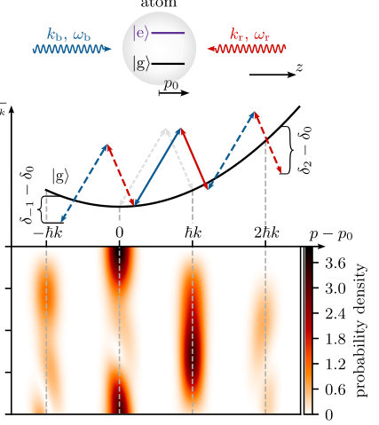
<figcaption class="paper-figure-caption"><b>Fig 1.</b> Figure 1. First-order Bragg diffraction. (a) Schematic setup for Bragg diffraction. Counterpropagating lasers with wave numbers and frequencies 𝑘b,r and 𝜔b,r interrogate a two-level atom with internal energies ℏ𝜔g and ℏ𝜔e. (b) Kinetic energy of ground-state atoms dependent on the off-resonant momentum 𝑝−𝑝0. Arrows show two- photon processes induced by the counterpropagating lasers imparting momentum ℏ𝑘= ℏ𝑘b + ℏ𝑘r to the atom. The solid arrows depict a Doppler-detuned transition between the main momentum classes 𝑛= 0, 1. The resonant coupling is shown in dashed gray, and the colored dashed arrows display the coupling to adjacent classes 𝑛= −1, 2, which are detuned by 𝛿−1,2 −𝛿𝑛for atoms...</figcaption>
</figure>
<figure class="paper-figure-card">
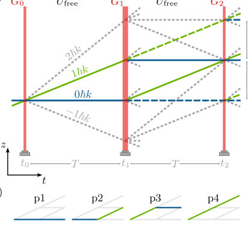
<figcaption class="paper-figure-caption"><b>Fig 2.</b> Figure 2. (a) Space-time diagram of a Mach–Zehnder atom interfer- ometer driven by first-order Bragg diffraction in absence of external potentials. Beam-splitter 𝐺0,2 and mirror pulses 𝐺1 of duration 𝑡𝑗 create the main interferometer (solid lines). Between the laser pulses, the atoms propagate freely (𝑈free) for an interrogation time 𝑇. The interferometer is driven between the momentum classes 𝑛= 0 (blue) and 𝑛= 1 (green), where the colored dashed paths are introduced by the velocity-selective mirrors, creating additional exits displaced w. r. t. the main exit by 𝛿𝑧= ℏ𝑘𝑇/𝑚with atomic mass 𝑚. We assume the atomic clouds to be sufficiently localized such that the main exit is contained in Σ =...</figcaption>
</figure>
<figure class="paper-figure-card">
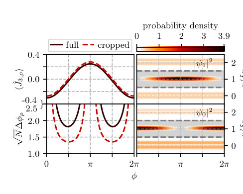
<figcaption class="paper-figure-caption"><b>Fig 3.</b> Figure 3. (top left panel) Interference signals ⟨ˆ𝐽3,𝜌⟩obtained from scanning the interferometer phase 𝜙including (𝜌= H, full) and without (𝜌= Σ, cropped) the quasi-incoherent background signal for 𝑁= 1. The atom has initially a Gaussian momentum distribution, with standard deviation 𝜎𝑞= 0.05ℏ𝑘, centered at resonant momentum 𝑝0. The Rabi frequency is set to Ω0 = 0.1𝜔𝑘and the interrogation time to 𝑇= 103/Ω0. The cropped signal is slightly more centered around zero than the full signal, implying a decreased phase uncertainty (bottom left panel). (right) Spatial distribution of an atom directly after the MZI sequence in the momentum class 𝑛= 1 (top panel, |𝜓1|2) and 𝑛= 0 (bottom panel, |𝜓0|2)....</figcaption>
</figure>
<figure class="paper-figure-card">
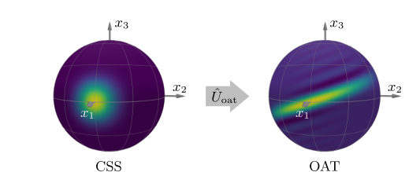
<figcaption class="paper-figure-caption"><b>Fig 4.</b> Figure 4. (left) Angular-momentum Wigner distribution [72] of the CSS | 𝜋</figcaption>
</figure>
<figure class="paper-figure-card">

<figcaption class="paper-figure-caption"><b>Fig 5.</b> Figure 5. MZI phase uncertainty 𝑁Δ𝜙2 normalized to SNL (red) and susceptible to velocity selectivity and parasitic diffraction to the adjacent momentum classes in dependence on the coupling strength 𝜀= Ω0/𝜔𝑘. The sphere shows the input equator-OAT state |𝜒−𝛼0⟩ for 30 atoms. The uncertainty is shown for numerically optimized twisting for optimal performance in an ideal MZI 𝜒0 ≈1.61 × 10−3, and 𝑁= 2 × 104 atoms that initially have a Gaussian momentum distribution of width 𝜎𝑞that is centered at the respective momentum class’ center. The uncertainty was calculated by determining the interferometric contributions from Tab. II up to the second order in 𝜀. Dashed lines show two special cases: (i)...</figcaption>
</figure>
</div>

<p><strong>Summary.</strong> This paper investigates how the competing effects of parasitic diffraction and velocity selectivity limit the precision of atom interferometers. It shows that by balancing pulse duration and optimizing the orientation of entangled states, one can maintain sub-shot-noise sensitivity despite these loss mechanisms.</p>
<p><strong>Why it may be interesting.</strong> It provides a rigorous analytical framework for understanding how fundamental atom-optics imperfections limit quantum-enhanced metrology, offering specific strategies like 'signal cropping' and state optimization to recover sensitivity.</p>
<details>
<summary>Detailed structure</summary>
<p><strong>Main problem.</strong> The paper addresses the degradation of phase sensitivity in atom interferometry caused by the trade-off between parasitic diffraction in the quasi-Bragg regime and velocity selectivity in long-pulse regimes.</p>
<p><strong>Main result.</strong> The authors demonstrate that sub-shot-noise sensitivity is achievable in an intermediate pulse duration regime and that the deleterious effects of higher-order diffraction can be mitigated by optimizing the input quantum state (e.g., OAT state inclination).</p>
<p><strong>Method.</strong> A second-quantized perturbative approach using a Dyson series expansion and adiabatic elimination is used to derive the time evolution of momentum-class field operators.</p>
<p><strong>Model / system.</strong> A Mach-Zehnder interferometer (MZI) using a two-level atomic ensemble subject to first-order Bragg diffraction with counterpropagating lasers, modeled via a multi-mode bosonic Hamiltonian.</p>
<p><strong>Key observables.</strong> Interference signal (atom-number difference), phase uncertainty, atom loss, and transmission/reflection coefficients.</p>
<p><strong>Important parameters / regimes.</strong> Rabi frequency (coupling strength epsilon), pulse duration, Doppler detuning, twisting strength (chi), and momentum distribution width.</p>
<p><strong>Assumptions / limitations.</strong> The lasers are far-detuned from the atomic transition (allowing adiabatic elimination), the excited state is only virtually populated, and atom-atom interactions are negligible.</p>
<p><strong>Figures summary.</strong> Fig 1 shows the experimental setup and energy-momentum diagrams for Bragg diffraction; Fig 2 shows the MZI space-time diagram; Fig 3 compares full vs. cropped signals and spatial distributions; Fig 4 shows Wigner distributions for CSS and OAT states; Fig 8 and 9 show phase uncertainty comparisons and optimization results.</p>
<p><strong>Paper structure.</strong> The paper introduces the Bragg diffraction trade-off, develops a second-quantized perturbative framework for the MZI, analyzes the impact of velocity selectivity and parasitic loss, evaluates quantum-enhanced states (CSS and OAT), and concludes with optimization strategies for pulse shape and state preparation.</p>
</details>
<details>
<summary>Abstract</summary>
<p>Spin squeezing in atomic ensembles enables atom interferometry with sensitivities below the shot-noise limit, but the associated entanglement is highly susceptible to loss, making imperfections in atom optics a central limitation. Bragg diffraction is an established technique for driving transitions between atomic momentum states and enables large-momentum transfer through higher-order diffraction while preserving the internal state. However, it is intrinsically limited by two competing mechanisms: short light pulses induce parasitic diffraction into off-resonant orders beyond an effective two-level description, while long pulses face velocity selectivity. We derive analytical expressions in a second-quantized framework for the atom optics and phase uncertainty of a Mach-Zehnder interferometer including these effects. We demonstrate that sub-shot-noise scaling is achieved only in a regime of intermediate pulse duration. Furthermore, we show that deleterious effects of higher-order diffraction are partially mitigated by optimizing the input quantum state.</p>
</details>
<p><sub><a href="#top">↑ back to top</a></sub></p>

<p><a id="paper-2605.22218"></a></p>
<h3 id="three-sins-against-physics-by-an-exaggerated-quantum-information-perspective"><a href="http://arxiv.org/abs/2605.22218v1">Three sins against physics by an exaggerated quantum information perspective</a></h3>
<p><strong>Authors:</strong> Valerio Scarani<br>
<strong>Type:</strong> theory · <strong>Category:</strong> quantum information and computing · <strong>PDF:</strong> <a href="https://arxiv.org/pdf/2605.22218v1">https://arxiv.org/pdf/2605.22218v1</a><br>
<strong>Analysis basis:</strong> full PDF text, analyzed in chunks
<strong>Topic relevance:</strong> <code>entanglement &amp; information structure</code> <strong>2/5</strong> · <code>quantum measurements</code> <strong>2/5</strong> · <code>interference shaping light</code> <strong>1/5</strong></p>
<div class="figure-strip-hint">↔ Scroll figures horizontally</div>
<div class="paper-figures-scroll">
<figure class="paper-figure-card">

<figcaption class="paper-figure-caption"><b>Fig 1.</b> Low-resolution page preview, page 2</figcaption>
</figure>
<figure class="paper-figure-card">

<figcaption class="paper-figure-caption"><b>Fig 2.</b> Low-resolution page preview, page 3</figcaption>
</figure>
</div>

<p><strong>Summary.</strong> This paper critiques the 'quantum information perspective' for potentially distorting our understanding of physics. It argues that focusing too heavily on gates, ignoring Hamiltonians, and treating nature as an adversary can lead to incorrect physical conclusions. The work serves as a foundational reminder to ground quantum information theory in underlying physical reality.</p>
<p><strong>Why it may be interesting.</strong> It provides a critical perspective on the foundational assumptions used in quantum optics and quantum information, specifically regarding the physical reality of quantum resources versus classical wave phenomena.</p>
<details>
<summary>Detailed structure</summary>
<p><strong>Main problem.</strong> The author addresses how an over-reliance on the quantum information perspective can lead to physical distortions, specifically by over-abstracting reality through gates, ignoring Hamiltonians, and adopting an adversarial view of nature.</p>
<p><strong>Main result.</strong> The paper identifies three 'sins': confusing classical mode coherence with quantum state coherence, focusing on unitary gates while ignoring their underlying Hamiltonians, and treating physical discovery as an adversarial game.</p>
<p><strong>Method.</strong> The author uses conceptual and philosophical analysis of quantum information frameworks, such as resource theories, nonlocal games, and quantum circuits, contrasted with fundamental principles of optics and quantum mechanics.</p>
<p><strong>Model / system.</strong> The discussion covers optical systems (linear and non-linear interferometry, Maxwell's equations), quantum information models (qubits, Clifford gates, Fock space), and the relationship between unitary evolutions and Hamiltonians.</p>
<p><strong>Key observables.</strong> First-order coherence (g1), second-order coherence (g2), photon counting statistics, and Bell nonlocality.</p>
<p><strong>Important parameters / regimes.</strong> Single-photon regime (energy thresholds), Clifford operations, and the distinction between adversarial and non-adversarial settings.</p>
<p><strong>Assumptions / limitations.</strong> The author critiques the assumption that an adversarial 'game' framework is the most appropriate way to understand the ontology of quantum mechanics.</p>
<p><strong>Paper structure.</strong> The paper is structured around three main arguments (the 'sins'), followed by a concluding reflection on the philosophical implications of the adversarial view in experimental physics.</p>
</details>
<details>
<summary>Abstract</summary>
<p>I point out three ways in which the perspective of quantum information may lead to distorted claims about physics: forgetting that light does not need to be quantised to show coherence; ignoring the generators of unitary evolutions; and approaching the discovery of nature as a fight against an adversary.</p>
</details>
<p><sub><a href="#top">↑ back to top</a></sub></p>

<p><a id="paper-2605.21880"></a></p>
<h3 id="device-independent-quantum-secret-sharing-protocol-enhanced-by-advantage-distillation"><a href="http://arxiv.org/abs/2605.21880v1">Device-Independent Quantum Secret Sharing Protocol Enhanced by Advantage Distillation</a></h3>
<p><strong>Authors:</strong> Yong-Hui Yang, Jian-Hong Shi, Hong-Wei Li, Hai-Long Zhang, Yun-Teng Yang, Yu-Bing Zhu, Yan-Yang Zhou<br>
<strong>Type:</strong> theory · <strong>Category:</strong> quantum information and computing · <strong>PDF:</strong> <a href="https://arxiv.org/pdf/2605.21880v1">https://arxiv.org/pdf/2605.21880v1</a><br>
<strong>Analysis basis:</strong> full PDF text, analyzed in chunks
<strong>Topic relevance:</strong> <code>entanglement &amp; information structure</code> <strong>2/5</strong> · <code>quantum measurements</code> <strong>2/5</strong></p>
<div class="figure-strip-hint">↔ Scroll figures horizontally</div>
<div class="paper-figures-scroll">
<figure class="paper-figure-card">

<figcaption class="paper-figure-caption"><b>Fig 1.</b> FIG. 1. Schematic of the DI-QSS protocol. A central source prepares a large number of identical three-photon polarization-entangled GHZ states, which are then divided into three sequences, denoted as E1, E2 and E3. The photons in these three sequences are distributed to three remote users, Alice, Bob and Charlie, respectively. Each user independently chooses a measurement basis and obtains a measurement outcome of -1, +1 or no-click event (⊥).</figcaption>
</figure>
<figure class="paper-figure-card">

<figcaption class="paper-figure-caption"><b>Fig 2.</b> FIG. 2. Flowchart of the tripartite advantage distillation pro- cedure. This figure illustrates the post-processing procedure of the advantage distillation technique in a tripartite DI-QSS protocol.</figcaption>
</figure>
<figure class="paper-figure-card">

<figcaption class="paper-figure-caption"><b>Fig 3.</b> FIG. 3. Comparison of the secret sharing rates (r) before and after advantage distillation under different fidelities. Dashed and solid lines respectively represent the protocol perfor- mance before and after advantage distillation under various fidelities. It can be intuitively observed that after applying advantage distillation, the η−r curves under all fidelities shift upward significantly</figcaption>
</figure>
<figure class="paper-figure-card">

<figcaption class="paper-figure-caption"><b>Fig 4.</b> FIG. 4. Three-dimensional plot of the secret sharing rate (r) versus the global detection efficiency (η) and fidelity (F) before and after applying advantage distillation. The blue surface (without advantage distillation) lies entirely below the red surface (with advantage distillation), indicating that the advantage distillation technique significantly enhances the secret sharing rate for any given combination of η and F. More importantly, the red surface maintains a positive secret sharing rate (r &gt; 0) even within regions of lower global detection rate and lower fidelity.</figcaption>
</figure>
<figure class="paper-figure-card">

<figcaption class="paper-figure-caption"><b>Fig 5.</b> FIG. 6. Three-dimensional surfaces showing the relationship between the secret sharing rate, bit-flip rate, and fidelity. The blue surface represents the protocol performance with advan- tage distillation, while the purple surface corresponds to the original protocol performance. The plot demonstrates that for any given fidelity F, the advantage distillation technique significantly enhances the protocol’s ability to generate secure secrets under higher bit-flip noise.</figcaption>
</figure>
</div>

<p><strong>Summary.</strong> This paper proposes an enhanced device-independent quantum secret sharing protocol by adapting the advantage distillation technique to a three-party setting. The method significantly improves noise tolerance and extends the maximum secure communication distance over optical fibers. It demonstrates that integrating distillation with post-selection and noise pre-processing makes DI-QSS more practical for real-world quantum networks.</p>
<p><strong>Why it may be interesting.</strong> This work is highly relevant to quantum optics and quantum networks as it provides a robust method to enhance the performance of multipartite entanglement-based protocols against realistic environmental decoherence and photon loss.</p>
<details>
<summary>Detailed structure</summary>
<p><strong>Main problem.</strong> The practical implementation of Device-Independent Quantum Secret Sharing (DI-QSS) is severely limited by high requirements for detection efficiency, low noise tolerance, and short communication distances due to channel loss.</p>
<p><strong>Main result.</strong> By extending the advantage distillation technique to a three-party setting, the authors significantly increased noise tolerance (from 10.17% to 28.49%) and extended the maximum secure fiber distance (from 0.16 km to 1.85 km).</p>
<p><strong>Method.</strong> The authors redesigned a tripartite data interaction and verification procedure for advantage distillation and systematically integrated it with three strategies: noise pre-processing, post-selection, and a combination of both.</p>
<p><strong>Model / system.</strong> A three-party DI-QSS protocol involving Alice, Bob, and Charlie connected to a central source distributing three-photon polarization-entangled GHZ states.</p>
<p><strong>Key observables.</strong> Svetlichny polynomial (S_ABC), Quantum Bit Error Rate (QBER), secret sharing rate (r), global detection efficiency (eta), and entanglement fidelity (F).</p>
<p><strong>Important parameters / regimes.</strong> GHZ state fidelity (F), global detection efficiency (eta), fiber attenuation (0.2 dB/km), and bit-flip probability (q).</p>
<p><strong>Assumptions / limitations.</strong> The security analysis assumes Eve obeys the laws of quantum physics and focuses on collective attacks; the protocol relies on the violation of the Svetlichny inequality.</p>
<p><strong>Figures summary.</strong> Figure 1 shows the protocol schematic; Figure 2 illustrates the advantage distillation flowchart; Figure 3 shows secret sharing rate vs. efficiency; Figure 4 is a 3D plot of rate vs. efficiency and fidelity; Figure 9 and 10 show performance vs. transmission distance under different noise levels.</p>
<p><strong>Paper structure.</strong> The paper introduces the DI-QSS problem, describes the proposed tripartite advantage distillation framework, details three specific improvement strategies, presents numerical simulations comparing these strategies, and concludes with future directions.</p>
</details>
<details>
<summary>Abstract</summary>
<p>Device-independent quantum secret sharing (DI-QSS) provides high security by eliminating the need to trust devices, yet its practical performance is limited by channel loss and noise. This work extends advantage distillation from two-party quantum key distribution (QKD) to three-party DI-QSS, redesigning the corresponding data interaction and verification procedures. The technique is systematically applied to the basic protocol and three active improvement strategies: noise preprocessing, post-selection, and their combination. This approach enhances noise tolerance, reduces the required global detection efficiency threshold, and significantly extends the maximum secure communication distance. Numerical simulations demonstrate that for the basic protocol over fiber, the maximum secure distance increases from 0.16 km to 1.85 km, and the noise tolerance improves from 10.17% to 28.49%. The results show that generalizing advantage distillation to the three-party setting effectively strengthens the protocol's robustness and practicality, enhancing its adaptability to realistic noise and advancing the development of more reliable quantum secret sharing systems.</p>
</details>
<p><sub><a href="#top">↑ back to top</a></sub></p>

<p><a id="paper-2605.22439"></a></p>
<h3 id="minimal-permutation-invariant-qudit-codes-from-edge-colorings-of-complete-graphs"><a href="http://arxiv.org/abs/2605.22439v1">Minimal Permutation-Invariant Qudit Codes from Edge-Colorings of Complete Graphs</a></h3>
<p><strong>Authors:</strong> Eric Kubischta, Ian Teixeira<br>
<strong>Type:</strong> theory · <strong>Category:</strong> quantum information and computing · <strong>PDF:</strong> <a href="https://arxiv.org/pdf/2605.22439v1">https://arxiv.org/pdf/2605.22439v1</a><br>
<strong>Analysis basis:</strong> full PDF text, analyzed in chunks
<strong>Topic relevance:</strong> <code>Rydberg arrays</code> <strong>2/5</strong> · <code>entanglement &amp; information structure</code> <strong>2/5</strong></p>
<div class="figure-strip-hint">↔ Scroll figures horizontally</div>
<div class="paper-figures-scroll">
<figure class="paper-figure-card">

<figcaption class="paper-figure-caption"><b>Fig 1.</b> Low-resolution page preview, page 2</figcaption>
</figure>
<figure class="paper-figure-card">

<figcaption class="paper-figure-caption"><b>Fig 2.</b> Low-resolution page preview, page 3</figcaption>
</figure>
<figure class="paper-figure-card">

<figcaption class="paper-figure-caption"><b>Fig 3.</b> Low-resolution page preview, page 4</figcaption>
</figure>
<figure class="paper-figure-card">

<figcaption class="paper-figure-caption"><b>Fig 4.</b> Low-resolution page preview, page 5</figcaption>
</figure>
<figure class="paper-figure-card">

<figcaption class="paper-figure-caption"><b>Fig 5.</b> Low-resolution page preview, page 6</figcaption>
</figure>
</div>

<p><strong>Summary.</strong> This paper establishes that four physical qudits are both necessary and sufficient to encode one logical qudit with distance two within the symmetric subspace. The authors provide a universal construction for any dimension q by mapping the quantum error-correction requirements to combinatorial edge-coloring problems on complete graphs.</p>
<p><strong>Why it may be interesting.</strong> This is highly relevant for quantum error correction in systems with inherent symmetries, such as trapped ions or Rydberg atoms, where permutation-invariant noise models are physically motivated.</p>
<details>
<summary>Detailed structure</summary>
<p><strong>Main problem.</strong> Determining the minimum block length n required to construct permutation-invariant (PI) quantum codes that can encode one logical qudit of dimension q with distance d=2.</p>
<p><strong>Main result.</strong> The authors prove that n=4 is the minimum block length required and provide a general construction for ((4, q, 2))_q codes for all q &gt;= 2 using graph-theoretic edge-colorings.</p>
<p><strong>Method.</strong> The study uses representation theory of SU(q), linear programming constraints, and a combinatorial reduction of the Knill-Laflamme conditions to edge-coloring problems on complete graphs.</p>
<p><strong>Model / system.</strong> The system consists of n qudits of local dimension q restricted to the symmetric subspace (permutation-invariant subspace) of the total Hilbert space.</p>
<p><strong>Key observables.</strong> Knill-Laflamme error-detection conditions, weight/occupation numbers, and Cartan/root operator expectation values.</p>
<p><strong>Important parameters / regimes.</strong> Local dimension q, block length n, code distance d=2, and code dimension K=q.</p>
<p><strong>Assumptions / limitations.</strong> The codes are restricted to the symmetric subspace and are designed specifically to detect single-site (one-body) traceless errors.</p>
<p><strong>Paper structure.</strong> The paper begins by defining the problem of PI codes, uses linear programming to prove the non-existence of codes for n &lt;= 3, then develops a construction for n=4 by decomposing error conditions into root and Cartan parts, and finally uses graph theory (edge-coloring and 1-factorization) to provide explicit constructions for both odd and even q.</p>
</details>
<details>
<summary>Abstract</summary>
<p>We study permutation-invariant quantum codes in the symmetric subspace $\mathrm{Sym}^n(\mathbb{C}^q) $ of $n$ qudits of local dimension $q$. For every integer $q\geq 2$, we construct a permutation-invariant code with parameters $((4,q,2))_q$. Thus four physical qudits suffice to encode one logical qudit with distance two in the symmetric sector for every local dimension. We also show, using linear-programming constraints for permutation-invariant quantum codes, that no permutation-invariant code of dimension $q$ and distance at least $2$ exists in $\mathrm{Sym}^n(\mathbb{C}^q)$ for $n\leq 3$. Hence four qudits are necessary and sufficient.   The construction has a simple representation-theoretic and combinatorial description. In the irreducible $\mathrm{SU}(q)$-module $\mathrm{Sym}^4(\mathbb{C}^q)$, the distance-two Knill-Laflamme conditions split into root and Cartan parts. By restricting supports to the even-entry occupation layer, all root-error conditions vanish automatically. The remaining Cartan conditions reduce to linear balancing constraints on packets of occupation vectors. These packets admit a natural graph-theoretic interpretation in terms of the vertices and edges of the complete graph $K_q$: for odd $q$, they are organized by the midpoint rule, while for even $q$, they are organized by a decomposition of $K_q$ into perfect matchings. In this way, the existence of minimal $((4,q,2))_q$ permutation-invariant codes is reduced to a parity-dependent edge-coloring problem on $K_q$.</p>
</details>
<p><sub><a href="#top">↑ back to top</a></sub></p>

<p><a id="paper-2605.22614"></a></p>
<h3 id="nonlinear-magnon-magnetic-moment-transport-in-triangular-lattice-f-wave-antialtermagnets"><a href="http://arxiv.org/abs/2605.22614v1">Nonlinear Magnon Magnetic Moment Transport in Triangular-Lattice f-Wave Antialtermagnets</a></h3>
<p><strong>Authors:</strong> Volodymyr P. Kravchuk, Kostiantyn V. Yershov, Bastián Pradenas, Robin R. Neumann, Rodrigo Jaeschke-Ubiergo, Ricardo Zarzuela, Jairo Sinova, Jeroen van den Brink, Alexander Mook<br>
<strong>Type:</strong> theory · <strong>Category:</strong> strongly correlated electrons · <strong>PDF:</strong> <a href="https://arxiv.org/pdf/2605.22614v1">https://arxiv.org/pdf/2605.22614v1</a><br>
<strong>Analysis basis:</strong> full PDF text, analyzed in chunks
<strong>Topic relevance:</strong> <code>non-equilibrium dynamics</code> <strong>2/5</strong> · <code>spintronics-quantum-optics interface</code> <strong>2/5</strong></p>
<div class="figure-strip-hint">↔ Scroll figures horizontally</div>
<div class="paper-figures-scroll">
<figure class="paper-figure-card">

<figcaption class="paper-figure-caption"><b>Fig 1.</b> FIG. 1. Triangular lattice of frustrated spins with J &gt; 0. Three uniformly magnetized sublattices m1, m2, and m3 are shown by different colors. The magnetic unit cell is deter- mined by the vectors e1 and e2 and is shown by the orange shading, while a1 and a2 represent the primitive basis vec- tors of the triangular lattice. The magnetic field B is applied perpendicularly to the lattice.</figcaption>
</figure>
<figure class="paper-figure-card">

<figcaption class="paper-figure-caption"><b>Fig 2.</b> FIG. 2. (a) – The isosurfaces of constant energy εν,k = ε0 are built from the dispersion relations in Eq. (5) for the case B = 0. The value of the magnon magnetic moment in Eq. (6) is shown by the color scheme. The 1st Brillouin zone (1.BZ) corresponding to the magnetic unit cell is shown in gray shad- ing. (b) – Distribution of the spin-splitting parameter λ de- fined in Eq. (7) over the 1.BZ demonstrates the f-wave char- acter of the magnon spectra.</figcaption>
</figure>
<figure class="paper-figure-card">

<figcaption class="paper-figure-caption"><b>Fig 3.</b> FIG. 3. The effect of the Zeeman splitting of modes ε±1,k0(B) for the fixed wave vector k0 shown by the red dot in Fig. 2(a). Here, lines show the eigen-energies (5) while the magnon in- tensities obtained by means of the spin lattice simulations (see Appendix C for the details) are shown by the color scheme.</figcaption>
</figure>
<figure class="paper-figure-card">

<figcaption class="paper-figure-caption"><b>Fig 4.</b> FIG. 4. The influence of the applied magnetic field on the magnon modes is shown in terms of the dispersion relations, see panels (a) and (e), and in terms of the reconstructed single spin dynamics, see panels (b-d) and (f-h). The green, red, and blue arrows show three neighboring magnetic moments m1, m2, and m3 belonging to three different sublattices. The ground 120◦state lies in xy-plane. The insets show the dynamics of the vector spin chirality K and the total magnetization m for the cases without (upper row) and with (bottom row) an applied magnetic field, respectively. The applied field is B = 0.1B0 ˆz. For panels (b-d) and (f-h), the wave vector k = 10−3 ˆx/a0 is fixed and close to...</figcaption>
</figure>
<figure class="paper-figure-card">

<figcaption class="paper-figure-caption"><b>Fig 5.</b> FIG. 5. The influence of the interlayer coupling on the magnon spectra is shown in panels (a,b). The isosurfaces of the constant energy εν,k = 0.6ε0 for all six modes for the case Jz/J = 0.05 are shown in panels (c,d) for different val- ues of kz. The isosurface color shows the magnon magnetic moment. Magnetic field is B = 0.1B0 and B = 0 for panels (a,b), and (c,d), respectively.</figcaption>
</figure>
</div>

<p><strong>Summary.</strong> This paper identifies a new class of f-wave antialtermagnets where magnons carry a magnetic moment perpendicular to the spin plane. It predicts that these systems will exhibit unique nonlinear thermal transport phenomena, such as the spin-splitter and Edelstein effects, which could be detected via Lorentz microscopy.</p>
<p><strong>Why it may be interesting.</strong> not directly relevant</p>
<details>
<summary>Detailed structure</summary>
<p><strong>Main problem.</strong> The study investigates spin excitations (magnons) in a triangular-lattice Heisenberg antiferromagnet to demonstrate that they carry a magnetic moment perpendicular to the spin-ordering plane, identifying the system as an f-wave antialtermagnet.</p>
<p><strong>Main result.</strong> The researchers show that magnons in this system possess an out-of-plane magnetic moment and predict nonlinear thermal transport signatures, specifically the spin-splitter and Edelstein effects, in 3D-stacked versions of the lattice.</p>
<p><strong>Method.</strong> The study employs the Holstein-Primakoff formalism, Nambu spinor representation, and the Boltzmann transport equation within the relaxation-time approximation, supplemented by Landau-Lifshitz spin-lattice dynamics simulations.</p>
<p><strong>Model / system.</strong> A 2D triangular-lattice Heisenberg antiferromagnet with a 120-degree ground state, extended to a 3D stack of antiferromagnetically coupled layers (an antialtermagnet) under an external magnetic field.</p>
<p><strong>Key observables.</strong> Magnon magnetic moment, spin-splitting parameter, spin current (spin-splitter effect), and net magnetization (Edelstein effect).</p>
<p><strong>Important parameters / regimes.</strong> Exchange constants (J, Jz), magnetic field (B), temperature gradients (grad T), and the low-temperature/small-field limits.</p>
<p><strong>Assumptions / limitations.</strong> The analysis assumes the validity of the harmonic approximation (linearized spin-wave theory), a constant temperature gradient, and the relaxation-time approximation for the Boltzmann equation.</p>
<p><strong>Figures summary.</strong> Figures include schematics of the lattice, energy isolines and spin-splitting parameter distribution in the Brillouin zone, Zeeman-splitting of magnon modes, and dispersion relations under different magnetic field strengths.</p>
<p><strong>Paper structure.</strong> The paper introduces the 2D triangular-lattice model, analyzes the symmetry and magnetic moment of magnons, extends the model to a 3D stacked antialtermagnet, and concludes by deriving nonlinear thermal transport coefficients and experimental signatures.</p>
</details>
<details>
<summary>Abstract</summary>
<p>We study the spin excitations in the frustrated coplanar 120-degree ground state of the triangular-lattice Heisenberg antiferromagnet and demonstrate that they carry a magnetic moment perpendicular to the plane in which the spins order, despite the ground-state sublattice moments having no out-of-plane component. The symmetry of the momentum dependence of the magnetic moment and energy of the magnons renders the system an odd-parity f-wave magnet. Extending this model to a stack of antiferromagnetically coupled triangular layers provides a realization of magnons in a three-dimensional f-wave antialtermagnet. We show that nonlinear thermal transport effects of magnons, such as Edelstein and spin-splitter effects, provide clear experimental signatures of magnons in f-wave antialtermagnets.</p>
</details>
<p><sub><a href="#top">↑ back to top</a></sub></p>

<p><a id="paper-2605.21795"></a></p>
<h3 id="athena-a-compiler-for-optimized-scheduling-in-distributed-quantum-computers"><a href="http://arxiv.org/abs/2605.21795v1">ATHENA: A Compiler For Optimized Scheduling In Distributed Quantum Computers</a></h3>
<p><strong>Authors:</strong> Won Joon Yun, Dhilan Nag, Sneha Ballabh, Jiapeng Zhao, Eneet Kaur, Poulami Das<br>
<strong>Type:</strong> theory · <strong>Category:</strong> quantum information and computing · <strong>PDF:</strong> <a href="https://arxiv.org/pdf/2605.21795v1">https://arxiv.org/pdf/2605.21795v1</a><br>
<strong>Analysis basis:</strong> full PDF text, analyzed in chunks
<strong>Topic relevance:</strong> <code>Rydberg arrays</code> <strong>2/5</strong> · <code>entanglement &amp; information structure</code> <strong>1/5</strong></p>
<div class="figure-strip-hint">↔ Scroll figures horizontally</div>
<div class="paper-figures-scroll">
<figure class="paper-figure-card">

<figcaption class="paper-figure-caption"><b>Fig 1.</b> Figure 1. (a) Current compilers have limited lookahead between blocks and commit to the schedule with fewest teleportations for each block while discarding the rest. They also defer scheduling future gates until preceding blocks complete. (b) Athena considers useful future blocks in its lookahead window and retains multiple candidate schedules. It also executes future operations and their teleportation early if EPR capacity is available.</figcaption>
</figure>
<figure class="paper-figure-card">

<figcaption class="paper-figure-caption"><b>Fig 2.</b> Figure 2. DQC compilation for (a) first two blocks on (b) a 3-chip DQC using the state-of-the-art compiler QuComm [23]. QuComm groups first five CNOTs into two blocks, 𝐵1 and 𝐵2. (c) It selects 𝑆2 and relocates qubits 0 and 4 to execute 𝐵1, exhausting its EPR resources. (d) To free EPRs, QuComm relocates qubit 0 from 𝑆2 to 𝑆1. (e) It then relocates qubit 1 to 𝑆2 for 𝐵2.</figcaption>
</figure>
<figure class="paper-figure-card">

<figcaption class="paper-figure-caption"><b>Fig 3.</b> Figure 3. (a) An example circuit with blocks 𝐵1 and 𝐵2. (b) Dependency for CNOT 𝐶is resolved after executing CNOT 𝐴. But QuComm does not schedule it until it reaches 𝐵2. The teleportation required is also scheduled only when the compiler realizes that it is necessary to schedule CNOT 𝐶. (c) In contrast, Athena relocates qubit 2 and schedules CNOT 𝐶as early as possible. This improves RELOCATE and CNOT concurrency and reduces overall program execution time.</figcaption>
</figure>
<figure class="paper-figure-card">

<figcaption class="paper-figure-caption"><b>Fig 4.</b> Figure 4. QuComm selects Schedule-A for 𝐵1 because it costs fewer teleportations (illustrated by the box width in this Figure) than Schedule-B. But the qubit relocations from Schedule-A eventually cost more teleportations in the fu- ture block 𝐵10. In contrast, Athena also retains Schedule-B and continues to schedule subsequent blocks. This allows Athena to eventually arrive at a more optimized executable for block 𝐵10. This approach allows Athena to select block schedules that are locally sub-optimal but globally optimal (such as Schedule-B here).</figcaption>
</figure>
<figure class="paper-figure-card">

<figcaption class="paper-figure-caption"><b>Fig 5.</b> Figure 5. Overview of Athena. It takes as input the program and initial qubit mapping and mainly focuses on instruction scheduling. This involves block formation (grouping operations into instruction blocks), an utility-driven lookahead-based scheduling involving multiple candidates, and optimizing teleportations via EPR-capacity-aware early relocate scheduling.</figcaption>
</figure>
</div>

<p><strong>Summary.</strong> The paper presents ATHENA, a new compiler designed to optimize instruction scheduling in distributed quantum computers. By using a multi-candidate scheduling approach and early resource allocation, it significantly reduces the latency and teleportation overheads that currently bottleneck distributed quantum architectures.</p>
<p><strong>Why it may be interesting.</strong> It addresses the fundamental architectural challenge of scaling quantum computers via modularity, specifically focusing on the interplay between entanglement resources (EPR pairs) and gate-level scheduling in atom-based distributed systems.</p>
<details>
<summary>Detailed structure</summary>
<p><strong>Main problem.</strong> Distributed Quantum Computers (DQCs) suffer from high latency and error rates due to inefficient scheduling of non-local CNOT gates, which require costly qubit teleportation and EPR resource management.</p>
<p><strong>Main result.</strong> The ATHENA compiler reduces teleportations by 34% on average and reduces program latency by 2x on average compared to state-of-the-art compilers like QuComm.</p>
<p><strong>Method.</strong> ATHENA uses Utility-driven Lookahead with Multi-Candidate Block Scheduling (UMS) to avoid early commitment to sub-optimal schedules and EPR-Capacity-Aware Early Scheduling (EES) to increase concurrency by scheduling future operations early.</p>
<p><strong>Model / system.</strong> A multi-chip Distributed Quantum Computer (DQC) architecture, specifically modeled on neutral-atom platforms using dual-species ($^{8TL}$Rb and $^{171}$Yb) for compute and communication qubits, featuring nearest-neighbor chip connectivity and finite EPR capacity.</p>
<p><strong>Key observables.</strong> Teleportation count, program latency, program fidelity, and effective teleportation count ($T_{eff}$).</p>
<p><strong>Important parameters / regimes.</strong> EPR capacity, latency-weighting parameter ($\alpha$), decay factor for lookahead ($eta$), and lookahead window size.</p>
<p><strong>Assumptions / limitations.</strong> The lookahead window is limited to a manageable size (e.g., 4 blocks) to maintain computational tractability, and the solution tree is pruned to the top-$w$ candidates.</p>
<p><strong>Figures summary.</strong> Figure 1 compares current compilers to ATHENA's approach; Figure 2 shows the QuComm compiler's logic; Figure 3 compares latency between QuComm and ATHENA; Figure 4 illustrates the 'early commitment' problem; Figure 7 shows the utility-driven lookahead process; Figure 9 shows solution tree pruning; Figure 10 illustrates the EES mechanism.</p>
<p><strong>Paper structure.</strong> The paper introduces the problem of DQC scheduling inefficiencies, describes the ATHENA compiler architecture (including UMS and EES components), details the implementation on neutral-atom models, provides performance evaluations against the QuComm baseline using various quantum algorithms, and discusses scalability and future work.</p>
</details>
<details>
<summary>Abstract</summary>
<p>Distributed Quantum Computers (DQCs) enable large system sizes by connecting smaller chips via photonic interconnects. DQCs use teleportation to relocate qubits and execute CNOTs between qubits on different chips. However, non-local CNOTs are 4.3-7.7$\times$ slower and 4$\times$ more error-prone than local CNOTs within a chip, which degrades program fidelities. Existing compilers group CNOTs with overlapping qubits into blocks and collectively optimize teleportations for each block. However, block-level scheduling has two key drawbacks. First, it lacks lookahead ability across blocks because it selects the optimal schedule for one block before proceeding to the next. As a result, it cannot assess the impact of a teleportation on future blocks. Our studies show that naively expanding the lookahead window to include subsequent blocks does not address this issue. Second, existing approaches do not schedule future block operations or the teleportations they require until preceding blocks are fully scheduled, introducing delay and latency overheads.   We propose ATHENA, a DQC compiler that addresses these limitations using two key insights: Utility-driven Lookahead with Multi-Candidate Block Scheduling (UMS) and EPR-Capacity-Aware Early Scheduling (EES). UMS schedules a block by considering only useful future blocks in its lookahead window. A future block has utility if it shares overlapping qubits with the current block being scheduled. UMS also maintains multiple schedules during compilation, allowing it to defer commitment to globally sub-optimal schedules early in the compilation process. EES enables ATHENA to schedule future operations and their relocations early when EPR resources are available. Our evaluations show that ATHENA reduces teleportations by 34% on average and up to 65%, and reduces latency by 2$\times$ on average and up to 2.9$\times$ compared to the state-of-the-art.</p>
</details>
<p><sub><a href="#top">↑ back to top</a></sub></p>
<hr>
<p>
<a href="index.html">← Index</a>
 · <a href="papers_02.html">← Previous</a> · <a href="papers_04.html">Next →</a>
</p>
<hr>

</body>
</html>
